ELECTRON-ION CORRELATION AND FINITE-SIZE EFFECTS IN QUANTUM MONTE CARLO SIMULATIONSBY
YUBO “PAUL” YANG
DISSERTATION
Submitted in partial fulfillment of the requirements for the degree of Doctor of Philosophy in Physics in the Graduate College of the University of Illinois at Urbana-Champaign, 2020Urbana, Illinois
Doctoral Committee: Assistant Professor Bryan K. Clark, Chair Professor David M. Ceperley, Director of Research Professor James N. Eckstein Professor Taylor L. Hughes
Abstract
This thesis explores properties of a mixture of electrons and ions using the quantum Monte Carlo method. In
many electronic structure studies, purely electronic properties are calculated on a static potential
energy surface generated by “clamped” ions. This can lead to quantitative errors, for example, in
the prediction of diamond carbon band gap, as well as qualitatively wrong behavior, especially when
light nuclei such as protons are involved. In this thesis, we explore different ways to include effects of
dynamic ions and tackle challenges that arise in the process. We benchmarked the diffusion Monte
Carlo (DMC) method on electron-ion simulations consisting of small atoms and molecules. We found
the method to be nearly exact once sufficiently accurate trial wave functions have been constructed.
The difference between the dynamic-ion and static-ion simulations can mostly be explained by the
diagonal Born-Oppenheimer correction. We applied this method to solid hydrogen at megabar pressures
and tackled additional problems involving geometry optimization and finite-size effects. The phase
diagram produced by our electron-ion DMC simulations differ from previous DMC studies, showing
50 GPa higher molecular-molecular transition and 150 GPa higher molecular-to-atomic transition
pressures. Both aforementioned studies forego the Born-Oppenheimer approximation (BOA) at hefty
computational cost. Unfortunately, this makes it more difficult to compare our results with previous
studies performed within the BOA. The remainder of the thesis tackle finite-size and ionic effects
within the BOA. We calculated the Compton profile of solid and liquid lithium, achieving excellent
agreement with experiment. Ionic effects of the liquid were included by averaging over disorder atomic
configurations. Finite-size correction was crucial for the Compton profile near the Fermi surface. Finally, we
tackled the finite-size error in the calculation of band gaps and devised a higher-order correction, which
allowed thermodynamic values of the band gap to be obtained from small simulation cells. These
advances mark important points along the path to the exact solution of the electron-ion problem.
We expect that the better understanding of both the electron-ion wave function and its relation to
finite-size effects obtained in this thesis can be crucial for future simulations of electron-ion systems.
To my friends and family.
Acknowledgments
First and foremost, I would like to thank my adviser, Prof. David Ceperley, for his unwavering support and guidance
over the past six years. His rigor, honesty, curiosity, and openness deeply influenced the way I view and do
science. I feel especially grateful for his fair treatment of students and collaborators. I was given much
freedom to pursue my own interests and always felt like a valued member of the team. From these
collaborations, I would like to thank Markus Holzmann and Carlo Pierleoni for many insightful discussions. I
would like to thank the QMCPACK team, especially Raymond Clay III, who guided me through some
initial hurtles getting to know the code and continue to be responsive and helpful. I look forward to
continued collaborations, where I can learn from everyone and hopefully contribute more to our common
interests.
I want to thank the CCMS program at LLNL, especially my mentor Miguel Morales. His enthusiasm of research
is infectious. It was an invigorating summer interacting with Miguel and my fellow CCMS students Marnik Bercx,
Ian Bakst, and Christopher Linderälv.
Of course, I would not be here without the loving care and support of my family and the wonderful company of
my friends. I will not attempt to name everyone that was important for my life at Illinois, as I will invariably miss
one of you even if I go on for pages. I do have to thank my officemate Brian Busemeyer for not only being a model
colleague, who is always willing to answer stupid questions and entertain crazy ideas, but also for being a kind and
wonderful friend. From our shared passion for coffee, badminton, swimming, and biking to our never-ending debates
on Windows vs. Linux, Python 2 vs. 3, and functions vs. classes, I know we will remain colleagues and friends for
years to come.
Thanks for funding from: U.S. Department of Energy (DOE) Grant No. DE-FG02-12ER46875 as part of the
Scientific Discovery through Advanced Computing (SciDAC). DOE Grant No. NA DE-NA0001789. DOE Grant No.
0002911. The Blue Waters sustained-petascalecomputing project and the Illinois Campus Cluster, supported by the
National Science Foundation (Awards No. OCI-0725070 and No. ACI-1238993), the state of Illinois, the University
of Illinois at Urbana-Champaign, and its National Center for Supercomputing Applications and resources of the Oak
Ridge Leadership Computing Facility (OLCF) at the Oak Ridge National Laboratory, which is supported by the
Office of Science DOE Contract No. DE-AC05-00OR22725.
nonadiabatic coupling between electronic states k and j.
Λ
de Broglie wavelength.
P
pressure.
V
total potential energy.
T
total kinetic energy.
E
total energy.
ET
trial total energy.
ΨT
trial wave function.
σ2
variance of the local energy.
π
probability distribution.
Δ
band gap.
g(r)
pair correlation function.
S(k)
static structure factor.
U
negative exponent of the Jastrow wave function.
u(r)
pair contribution to U.
ωp
plasmon frequency.
𝜖k
dielectric function.
n(k)
momentum distribution.
J(p)
Compton profile.
Chapter 1 Introduction
1.1 The Electron-Ion Problem
The ultimate goal of this thesis is the accurate simulation of a many-body system of charged particles in the
non-relativistic limit. This goal was not achieved, but some progress has been made. For the remainder of this
thesis, the ground truth is assumed to be established by the exact solution of the Schrödinger equation (1.1) for
the electron-ion wave function Ψ(R,RI) of N electrons and NI ions
ĤΨ(R,RI) = iℏΨ(R,RI),
(1.1)
where the electron-ion hamiltonian consists of non-relativistic kinetic energies and Coulomb interactions
The lower-case i,j and upper-case I,J refer to the electrons and ions, respectively. The lower-case ri labels a
single electron position, whereas the upper-case R denotes the positions of all electrons R ≡{ri}. rI and RI play
analogous roles for the ions. ZI is the atomic number of ion I. If any eigenstate of Ĥ can be constructed to
arbitrary precision in a reasonable amount of time, which grows as a polynomial in the number of particles, then the
many-body electron-ion problem can be declared solved. Unfortunately, even state-of-the-art methods struggle with
just the ground state [1–3].
For equilibrium properties at high temperature, progress can be made by considering the Bloch equation (1.3)
for the thermal density matrix ρ ≡∑ie−βEi⟨Ψi|
Ĥρ = −ρ,
(1.3)
which results from the Schrödinger eq. (1.1) after a rotation from real to imaginary time τ = it, which is also
the inverse temperature τ∕ℏ = β ≡ 1∕(kBT). The partition function is a trace of the thermal density matrix and
reduces to the classical Boltzmann distribution at high temperature
Z = Tr Z ∝ e−βV.
(1.4)
Further, low-temperature properties of boltzmannons and bosons can be exactly and efficiently calculated using
the path integral method (Sec.2.2.1). The exact method is no longer practical when fermions, e.g., electrons, are
involved. Nevertheless, impressive results have been obtained for hydrogen when only the ground electronic state is
considered [4, 5]. A complete treatment of the full electron-ion hamiltonian eq. (1.2) is rarely attempted [6,
7].
The solution of the electron-ion problem would be an important milestone in computational condensed matter,
because it is considered a quantitatively accurate model for the vast majority of solids and liquids in condensed
matter experiments. Further, theoretically, it is a natural extension of the jellium model to multi-component system
and provides a firm foundation upon which relativistic effects can be included, for example via perturbation [8].
Finally, the laplacian in the non-relativistic kinetic energy operator can be interpreted as a generator of diffusion in
imaginary time. This makes it more straightforward to develop intuitive understanding of the quantum
kinetic energy as well as to deploy powerful computational techniques such as diffusion Monte Carlo
(Sec. 2.2.3).
1.1.1 The Born-Oppenheimer Approximation
Suppose all eigenstates of the electronic hamiltonian {ψk} are available at any ion configuration RI
ℋ(R;RI)ψk(R;RI) = Ek(RI)ψk(R;RI).
(1.5)
Then, one can attempt to separate the electron and ion problems by expanding an eigenstate of the full
hamiltonian Ĥ in the complete basis of electronic states
Ψl(R,RI) =∑k=0∞χlk(RI)ψk(R;RI),
(1.6)
where χlk(RI) are expansion coefficients with no dependence on electron positions. This expansion results in a
system of Schrödinger-like equations, each describing the ions moving on an electronic energy surface
Ej
χj− Λkj= iℏχj,
(1.7)
and coupled by the so-called nonadiabatic operator Λjk [9]. Derivation and behavior of Λjk are discussed in
Appendix A. While exact, eq. (1.7) is difficult to solve because all electronic states are coupled via Λkj. To fully
separate the electron and ion problems, one must approximate Λkj.
There are two common approximations to Λkj, the first is to set the entire matrix to zero, the second is to set
only the off-diagonal terms to zero. Both approximations decouple (1.7), allowing the complete separation of
electronic and ionic motions. Many different and sometimes conflicting names have been given to these two
approximations, including Born-Huang, Born-Oppenheimer and adiabatic approximation. To fix nomenclature, I
will call the all-zero approximation, Λjk= 0,∀j,k, the Born-Oppenheimer approximation (BOA). The diagonal
terms Λjj are considered diagonal Born-Oppenheimer correction (DBOC). Non-zero off-diagonal elements are
responsible for nonadiabatic effects.
1.2 Jellium
The jellium model eq. (1.8) brings the electronic problem into focus. It replaces the material-dependent ionic
potential in the electronic hamiltonian with a rigid homogeneous background of positive charge and is an important
stepping stone to the electron-ion problem. In Hartree atomic units
ℋHEG=∑i=1N−∇i2+∑i=1N∑j=1,j≠iN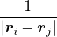 + Ee−b+ Eb−b,
(1.8)
where Ee−b and Eb−b are constants due to electron-background and background-background interactions. The
isotropic background eliminates potential symmetry breaking interactions that can be introduced by a
crystalline arrangement of the ions. The rigidity of the background also removes electron-ion coupling
effects. This model was studied in great detail in the past century and its ground-state behavior was
largely understood. Much progress has even been made regarding its excitations and finite-temperature
properties.
There is only one length scale in the jellium model: the average electron-electron separation a. In units of bohr,
this Wigner-Seitz radius rs= a∕aB determines the density of jellium.
≡=(rsaB)3
(1.9)
in 3D, where aB is the Bohr radius. The kinetic energy scales as rs−2 (due to ∇2) while the potential energies
scales as rs−1 (for 1∕r potential), so rs measures the relative strength of potential to kinetic energy. In this sense, rs
is the zero-temperature analogue of the classical coulomb coupling parameter
Γ ≡.
(1.10)
The valence electron density in alkaline metals is rs∼ 2, meaning the kinetic energy is important, so
the electrons delocalize and form a liquid to minimize kinetic energy. At sufficiently large rs (∼ 100
in 3D and ∼ 30 in 2D), the potential energy dominates, so the electrons localize to form a Wigner
crystal.
1.3 Hydrogen
Hydrogen is a logical starting point for solving the electron-ion problem. It has the simplest atomic structure and no
core electrons. The non-relativistic Schrödinger equation eq. (1.1) and (1.2) should work well for hydrogen.
Further, the ground state of its electronic hamiltonian can be compactly and accurately represented [10]. Without
core electrons, no essential modification needs to be made to the hamiltonian eq. (1.2) for a practical simulation,
e.g., pseudopotential.
At sufficiently high temperatures, the hydrogen plasma, equal mixture of isotropic positive charges
(protons) and negative charges (electrons), is a straightforward generalization of the jellium model to two
components. However, at low temperatures, the two-component analogue of the Wigner crystal, solid
hydrogen, is surprisingly complex. Since hydrogen is the lightest element, its zero-point motion has
large amplitude. The ion wave function explores a sufficiently large space to invalidate the harmonic
approximation for lattice vibrations. Further complicating matters, one can expect a metal-to-insulator
transition as well as an atomic-to-molecular transition that may or may not coincide as temperature
or pressure is decreased. On top of all that, naturally occurring isotopes, e.g., deuterium, and spin
isomers, e.g., para- and ortho-H2, allow the possibility of an intriguing blend of quantum effects at low
temperatures.
Hydrogen is also interesting due to its practical relevance. Being the most abundant element in the observable
universe, hydrogen and its isotopes are crucial for the understanding of stars and gas giants. Consider Jupiter, which
contains insulating gaseous H2 in the outer envelope and liquid metallic hydrogen deep inside. If there was a
first-order liquid-liquid transition between the two phases, then there would be an interface across which density
changes discontinuously. Depending on the solubility of helium in the two phases, there is the possibility of helium
rain across the interface and extra heat radiation due to this condensation [11]. Further, interior models of stars and
gas giants rely on numerically accurate equation-of-state (EOS) of various chemical species involving hydrogen (H+,
H, H2). A few percent change to the hydrogen EOS is enough to eliminate/create a rocky core for
Jupiter [12].
In addition to its relevance in astrophysics, hydrogen is also important in energy applications. Accurate
understanding of hydrogen EOS at high temperatures and pressures has obvious benefits to fusion experimental
design. Even at low temperatures, hydrogen-rich compounds, at sufficiently high pressures, have recently smashed
the superconducting transition temperature records held by the so-called “high-temperature” superconductors [13,
14].
Finally, the 85-year-old prediction for a low-temperature insulating-to-metallic transition of solid hydrogen, the
Wigner-Huntington transition, is close to being established [15–17]. Experimental observations [16, 17] and
theoretical calculations [2, 18] are converging, although more experimental and theoretical characterizations are
needed to settle current debates.
1.4 Lithium, Diamond, and Silicon
Despite complications introduced by core electrons, the jellium model is arguably better realized in the
valence of alkaline metals, e.g., lithium and sodium, than it is in hydrogen. The heavier nuclei are less
quantum and the core electrons screen their interaction with the valence electrons. This allows the
harmonic approximation to be more widely applicable. More importantly, they are easier to handle in
experiments than hydrogen and scatter X-rays more strongly, which facilitates precise experimental
determination of lattice structure along with other properties. These advantages allowed us to obtain
excellent agreement with experiment using an electron-ion QMC simulation performed within the BOA in
chapter ??.
In addition to alkaline metals, elemental insulators, e.g., diamond carbon and silicon, remain important testing
grounds for electronic QMC methods. Accurate and practical prediction of excitation energies using QMC is still an
active area of research. We make some progress in chapter ?? by reducing finite-size error in bandgap
calculations.
1.5 Thesis Outline
The remainder of this thesis is organized as follows. In chapter 2, I start by introducing the Monte Carlo methods
that we use to accurately treat electron correlation in the electronic problem as well as to solve the full electron-ion
problem at times. I then introduce the effective one-particle electronic structure methods used to generate trial wave
functions for the aforementioned QMC methods. Chapter 3 displays the form and properties of the Slater-Jastrow
wave function in detail, while chapter 4 discusses many-body finite-size correction, sometimes based on the
properties of the many-body wave function. Both wave function form and finite-size correction are crucial
for accurate and practical QMC simulations. The next four chapters display QMC results for a few
simple electron-ion systems. Chapter ?? benchmarks the QMC method as a complete solver for the
electron-ion problem without invoking the BOA on small atoms and molecules. Chapter 5 applies this
dynamic-ion QMC method to solve for the ground state of solid hydrogen. Chapter ?? considers the effect of
the ions on the momentum distribution of the valence electrons in lithium within the BOA. Finally,
chapter ?? presents an improved finite-size correction to the (purely electronic) bandgap calculated in
QMC.
Chapter 2 Methods
The main method used throughout this thesis is ground-state quantum Monte Carlo (QMC). This
chapter provides a physically motivated introduction to this method. In the first part, I start from the
familiar finite-temperature classical Monte Carlo method, then describe its generalization to a quantum
system, finally take the zero-temperature limit. The second part of this chapter describes practical
methods for constructing a many-body trial wave function, which is a crucial ingredient in many QMC
methods.
2.1 Classical Monte Carlo
The Monte Carlo methods mentioned in this thesis perform high-dimensional integrals by using random numbers to
sample probability distributions. These distributions must be non-negative in the entire domain of “states” over
which they are defined. In classical mechanics, a “state” of N particles in 3 dimensions is labeled by the positions
R ≡{ri} and momenta P ≡{pi} of the particles i = 1,…,N. The classical partition function for the canonical
ensemble
Z ≡ Tr(e−H∕kBT) =∫d3NRd3Np e−H(R,P)∕kBT,
(2.1)
where H(R,P) is the hamiltonian, kB is the Boltzmann constant, h is the Planck constant, and T is
temperature. For N distinguishable non-relativistic particles with mass m, the kinetic contribution to eq. (2.1)
can be integrated analytically, giving
Z =∫d3NRe−βV (R),
(2.2)
where V (R) is the potential energy of the N-particle system, β ≡ kBT, and Λ the de Broglie wavelength
Λ = 1∕2.
(2.3)
All equilibrium statistical mechanics properties can be calculated from the partition function, so the entirety of
classical equilibrium statistical mechanics reduces to the problem of evaluating the 3N-dimensional integral in
eq. (2.2) and its derivatives. Monte Carlo methods are ideally suited to evaluating high-dimensional integrals,
because the amount of computation does not increase as an exponential in the number of dimensions as in a
brute-force quadrature approach.
To calculate a property in the canonical ensemble, ones takes the trace
=,
(2.4)
where denotes ensemble average. Limiting to local observables that can be evaluated on the particle
coordinates, e.g., total potential energy V (r) and pair correlation function g(r)
=∫d3NRO(R) =∫d3NRπ(R)O(R),
(2.5)
where π(R) is the Bolzmann distribution
π(R) ≡∝ e−βV (R).
(2.6)
Monte Carlo estimation of works by sampling particle configurations from the Bolzmann distribution π(R)
and accumulating the average O(R)
=limNs→∞∑i=1NsO(Ri).
(2.7)
How does one sample a generic multi-dimensional probability distribution such as π(R)? An excellent answer
was given a 1953 paper authored by Metropolis et al. [19]. The Metropolis algorithm, designed by the Rosenbluths
supervised by the Tellers, works by constructing a Markov chain having π(R) as its stationary state. This is
achieved by a rejection method that maintains detailed balance
π(R)P(R → R′) = π(R′)P(R′→ R),
(2.8)
where P(R → R′) is the Markov chain transition probability from state R to R′. The Metropolis algorithm
breaks P into two steps: proposal and acceptance
P(R → R′) = T(R → R′)A(R → R′),
(2.9)
with the following accept/reject criteria: For any transition probability used to propose the state change
T(R → R′), accept the change with probability
A(R → R′) =min.
(2.10)
Using eq. (2.9) and (2.10) to prove eq. (2.8) is a good way to appreciate the design of this acceptance
probability.
Mathematically, π(R) is the unique stationary state of the Markov chain constructed by the Metropolis method
so long as P(R → R′) is ergodic. That is, there is finite probability of reaching any state R′ starting from any state
R using the transition rule P. In practice, however, a simulation can be stuck in a meta-stable state for its entire
duration, for example, due to a bad initial condition. Careful monitoring and checking of convergence is a must in
any serious Monte Carlo simulation.
2.2 Quantum Monte Carlo
I will start with the general, albeit somewhat complicated, path integral Monte Carlo (PIMC) method, because it
rigorously takes temperature into account and connects well with classical Monte Carlo. Then, I will describe
ground-state methods as limits and efficiency tricks to specialize the path integral method to the ground state.
While contrary to the historic progression of these methods, I find this perspective helpful for relating the methods
and visualizing them in their respective niches.
2.2.1 Path Integral Monte Carlo
The quantum partition function for the canonical ensemble needs to trace over discrete N-particle eigenstates,
rather than 2N 3-dimensional variables as in eq. (2.1)
Z ≡ Tr(e−Ĥ∕kBT) = Tr,
(2.11)
where Ei and are the eigenvalues and eigenstates of the hamiltonian H. To make contact with
classical mechanics, we put the density matrix (DM) for distinguishable particles in position basis (first
quantization)
ρD(R,R′;β) ≡,
(2.12)
where β ≡. Then the partition function becomes
Z(β) =∫d3NRρD(R,R;β),
(2.13)
which can be exactly factorized into two pieces
Z(β) =∫d3NRd3NR′ρD(R,R′;τ)ρD(R′,R;β − τ).
(2.14)
This factorization can be repeated until the temperature becomes high enough (τ → 0) that a semi-classical
approximation to ρD(R,R′;τ) is accurate. Given translation symmetry along imaginary time, β is
typically broken down into M equal-length pieces, i.e., τ = β∕M. For N non-relativistic particles each
having mass m, ρD can be calculated as an integral over a discretized path of particle coordinates
{Rm}
ρD(R0,RM;β) =limM→∞∫dR1…dRM−1exp.
(2.15)
The primitive approximation for the high-temperature density matrix ρDp satisfies
ln(4πλτ) −lnρDp(Rm− 1,Rm) =+ τV (Rm),
(2.16)
where λ ≡ is the quantumness of the particle and d is the number of spatial dimensions. Thus,
ρD(R0,RM;β) =limM→∞(4πλτ)−dNM∕2exp.
(2.17)
The main advantage of eq. (2.15) is that it turns the partition function eq. (2.13) into an integral of a product
of high-temperature DMs over all closed paths
Z =limM→∞∫dRdR1…dRM−1ρD(R,R1;τ)ρD(R1,R2;τ)…ρD(RM−1,R;τ).
(2.18)
Each closed path can be visualized as a collection of ring polymers, one for each particle. The linear extension of
a ring polymer is proportional to the particle’s de Broglie wavelength Λ = eq. (2.3). For distinguishable
particles, the integral needed to evaluate the quantum partition function eq. (2.18) poses no essential difficulty to a
Monte Carlo method when compared with its classical counterpart eq. (2.2). One simply has to integrate M
classical systems, which are coupled by the spring-like kinetic energy term in eq. (2.16). Each classical system is
typically referred to as a slice of imaginary time or a bead on the ring polymer. Converged results is obtained in the
zero time step τ → 0, equivalently the infinite slice M →∞ limit. The the primitive approximation eq. (2.16)
to the exact density matrix is correct only to O(τ), so a large number of beads is needed, resulting
in slow simulations. Better approximations can be constructed to be correct to O(τ2), for example
the pair-product form in Ref. [20]. However, if the particles are identical bosons, then one has to
consider particle permutations along the path (fermions pose an additional essential problem, see
Sec. 2.2.5)
ρB(R0,RM;β) =∑𝒫ρD(R0,𝒫RM;β),
(2.19)
where 𝒫RM contains the same N coordinates as RM, but with the particles relabeled. This permutation can
happen via any number of 1-, 2-, and up to N-particle exchanges between adjacent time slices along the path. Thus,
the state space of bosonic path integral is much larger than that of boltzmannic path integral. Efficient sampling of
permuting paths is a significant technical challenge. Fortunately, no uncontrolled approximation has been
introduced and exact simulations are possible for both bolzmannons and bosons via the Monte Carlo method [20,
21].
2.2.2 Variation Path Integral a.k.a. Reptation Monte Carlo
Even with accurate approximation to the high-temperature density matrix, the ground state is still costly to study
using the path integral formalism presented so far, because a large number of time slices have to be included to
approximate β →∞. Fortunately, one can still efficiently study this zero-temperature limit with the help of a trial
wave function , so long as it is non-negative. The ground-state “partition” function has only one
term
Z0=limβ→∞,
(2.20)
where is the ground state of the hamiltonian H. For sufficiently large β, any trial wave function not
orthogonal to the ground state ≠0 will be projected to the ground state by e−βH, so
Z0=limβ→∞≈,
(2.21)
for some βe large enough to be considered “equilibrated”. Performing path discretization as before
where τ = βe∕M. βe can be small if is a good approximate to the ground state . In this sense,
⟨ΨT| plays the role of a low-temperature density matrix to quickly close a long path, although its temperature
is ill-defined. No permutation needs to be sampled because quantum statistics are encoded in the trial wave
function. However, translation symmetry along imaginary time is broken. The 2M + 1 time slices each sample a
different probability distribution. Observables that do not commute with the hamiltonian are unbiased only when
evaluated in the middle section Rm, where |m| is small. This is because Rm needs to be sufficiently separated from
the trail wave function slices R−M and RM to be considered the zero-temperature limit. The trial wave functions at
the ends and the DMs in the middle of eq. (2.22) must all be non-negative for the integrand to be interpreted as a
probability distribution for the path {R−M,…,RM}. This path is open in general (R−M≠RM) and can be
visualized as a “reptile”. This method was first mentioned as variational path integral (VPI) [20], but
later popularized as reptation Monte Carlo (RMC) [22]. While the RMC method can be efficient,
it still requires all M classical systems to be stored in memory at one time and intelligent Monte
Carlo moves to change the reptile without ergodicity problems. This makes RMC more troublesome to
implement than classical Monte Carlo or molecular dynamics, because the entire reptile, containing O(M)
classical systems have to be updated to generate O(1) new decorrelated sample for the pure estimator
eq. (2.23).
2.2.3 Diffusion Monte Carlo
The diffusion Monte Carlo (DMC) method can be viewed as a simplification of RMC. When calculating a
ground-state observable using eq. (2.21), the pure estimator
p≡≈
(2.23)
is an unbiased ground-state estimate of Ô whether it commutes with the hamiltonian or not. We can forgo the
pure estimator for a simpler algorithm. Consider the mixed estimator
m≡≈.
(2.24)
Equation (2.24) has the advantage that the operator can be immediately applied to a trial wave function, which
is known at the beginning of the calculation. Further, the Ψ0 on the r.h.s. can be interpreted as being propagated
from ΨT using the imaginary-time propagator
Û(t) = e−tH.
(2.25)
For any t > βe, the mean of the observable eq. (2.24) should be stationary. The algorithm as described so far is
similar to classical molecular dynamics. One starts with a trial wave function at t = 0 and propagates it along
imaginary time. After some initial equilibration period, the mixed estimator fluctuates around some stationary
mean. One then runs for “longer” and accumulate statistics.
For identical non-relativistic particles having mass m, Û in coordinate basis is the Green function for
imaginary-time Schrödinger equation
G(R′← R;t) = =
limτ→0G(R′← R;τ) = .
(2.26)
The two terms in eq. (2.26) are the Green function for diffusion and weight accumulation. The quantumness
λ = of the particle determines its diffusion constant in imaginary time. Lighter particles diffuse “faster”. One
can, in principle, start with any classical system R, apply the Green functions repeatedly to update R, and
eventually end up sampling the mixed distribution .
While eq. (2.24)-(2.26) contain the main idea behind the DMC method, they do not result in a practical
algorithm. The weight of the classical system due to the potential term goes to zero or infinity exponentially fast,
especially when two charged particles coalesce. For a stable algorithm, one can modify the Green function eq. (2.26)
to more directly sample the mixed distribution
f(R,t) ≡ ΨT∗(R)e−t(H−ET)ΨT(R)ΨT∗(R)Ψ0(R),
(2.27)
where a trial energy ET is introduced to stablize the potential term. Substitute ΨT−1f in place of Ψ into the
imaginary-time Schrödinger equation −∂tΨ = HΨ, where H = −λ∇2+ V , we obtain
− ∂tf = ΨTHΨT−1f ⇒−∂tf = −λ∇⋅ (∇−v)f + (EL− ET)f,
(2.28)
where the local energy EL≡ and the drift vector
v ≡ 2ΨT−1∇ΨT= ∇lnΨT2.
(2.29)
After this importance-sampling transformation, the Green function eq. (2.26) is now modified to have three
contributing processes: diffusion, drift, and weighting. The pure diffusion process becomes a drift-diffusion process
guided by the trial wave function. Further, the weighting by the bare potential energy becomes weighting by the
local energy. Given suitably designed trial wave function, EL can be made continuous even if the original potential
V contains divergences, e.g., in the coulomb interaction. In practice, the mixed distribution is approximated by an
ensemble of walkers
f(R,t) ≈∑m=1Nwδ(R−Rm),
(2.30)
and the trial energy ET is adjusted every so often to keep the population of walkers Nw from explosion and
extinction. Equation (2.28) defines the DMC algorithm. While not strictly necessary, one typically adds a
Metropolis rejection step using the Green function G as transition probability T in eq. (2.10). This ensures that the
algorithm samples the desired probability distribution at any finite time step, where the Green function is
approximate [23].
For bosons and Bolzmannons, DMC gives the exact ground-state energy of H in the limit of infinitesimal time
step and uncontrolled walker population. Observables that do not commute with the hamiltonian
will suffer a mixed-estimator error, which vanishes as the trial wave function approaches the ground
state.
2.2.4 Variational Monte Carlo
Variational Monte Carlo (VMC) can be viewed as a limit of DMC at zero projection time, i.e., no branching. I
define VMC as a Monte Carlo algorithm that calculates the expectation value of an operator using a fixed trial wave
function ΨT
= 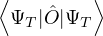.
(2.31)
When VMC is used to calculate the expectation value of the hamiltonian (Ô=ℋ), the resultant energy is an
upper bound to the true ground-state energy by the variational principle
EV≡= ≥ E0,
(2.32)
where the local energy serves as a local estimator for the total energy
EL(R;ΨT) ≡(R).
(2.33)
The variational energy EV is often taken as a measure of the quality of the trial wave function. In variationaloptimization, one changes parameters in ΨT to lower EV. However, EV is only one number and is far from a
complete descriptor of the 3N-dimensional many-body wave function. Another, arguably more powerful, measure of
the quality of ΨT is the variance of the local energy eq. (2.33)
σ2[ΨT] ≡≥ 0.
(2.34)
This variance will be zero if ΨT is any eigenstate of ℋ. Further, for systems with a gap Eg, σ2 and EV also
provide a lower bound for the ground-state energy by eq. (6.16) in Ref. [24]
EV− σ2∕Eg≤ E0≤ ET.
(2.35)
The VMC algorithm is particularly simple for a local observable. In this case, eq. (2.31) becomes an integral
over the 3N-dimensional particle coordinates
=∫dr,
(2.36)
which is easily evaluated by sampling r from the probability distribution
P(r) =,
(2.37)
and accumulating O(r). How does one sample a generic probability distribution like P(r)? One can
use the Metropolis algorithm to devise a Markov chain with P(r) being the stationary distribution.
Alternatively, P(r) can be set to be the stationary distribution of a dynamical process, e.g., Fokker-Planck
dynamics [25].
Suppose we wish a drift-diffusion process governed by
=∑i=1Nλf
(2.38)
to have P(r) as its stationary distribution
limt→∞f(r,t) = P(r) ∝|ΨT|2.
(2.39)
We can set each term in sum of the r.h.s. of eq. (2.38) to vanish
∇i2P = P∇i⋅vi+ vi⋅∇iP,
(2.40)
which gives the drift vector
vi== 2.
(2.41)
v pushes a walker towards peaks of P(r), making the sampling process more efficient than a random move. In
fact, no accept/reject procedure is necessary. The correct stationary distribution P(r) will be reached so long as the
time step is small enough to accurately approximate the Green function for each step. The Langevin equation
needed to solve eq. (2.38) is
= λv(r(t)) + η,
(2.42)
where η is a multidimensional Gaussian with a mean of zero and a variance of 2λ. In this light, the VMC
algorithm is more akin to stochastic classical molecular dynamics than Monte Carlo. However, the most efficient
algorithm is obtained when the Fokker-Planck formulation is combined with Metropolis Monte Carlo. By
introducing a metropolis accept/reject procedure at each step of the Fokker-Planck dynamics, we
eliminate the time step bias because detailed balance is enforced to sample |ΨT|2. Another way to view
this is that Fokker-Planck dynamics provides efficient drift-diffusion moves for an exact Monte Carlo
method.
Equation (2.38) defines an efficient implementation of the VMC algorithm. Interestingly, the governing
equation of DMC eq. (2.28) without the branching term is identical to that of VMC eq. (2.38) when
the same trial wave function is used for drift eq. (2.41). This implies that the drift-diffusion term in
the DMC Green function performs sampling of the trial wave function only. The local energy term
in eq. (2.28), when accumulated over the drift-diffusion process, is responsible for imaginary-time
projection.
2.2.5 Fermion Sign Problem
An essential difficult arises when one applies the path integral formalism to fermions. Even- and odd-permutations
contribute to the fermion DM with opposite signs
ρF(r0,rM;β) =∑𝒫(−1)𝒫ρD(r0,𝒫rM;β).
(2.43)
ρF is no longer positive definite and cannot be interpreted as a probability distribution to be sampled
by Monte Carlo. The canonical workaround is to sample the absolute value of the fermionic DM,
which is the bosonic DM, and keep the sign as an observable. In this way, a fermionic observable is
calculated as the ratio between a signful bosonic observable and the bosonic average of the permutation
sign
F≡===.
(2.44)
While mathematically exact, this leads to the well-known fermion sign problem, where the denominator in
eq. (2.44), the average sign, goes to zero exponentially fast as system size N and inverse temperature β increase. To
see this, consider the total free energies of N bosons vs. N fermions governed by the same hamiltonian H. The
average sign can be written as an exponential of the free energy difference
B=== e−β(FF−FB).
(2.45)
Since the total free energy is extensive, the exponent in eq. (2.45) is proportional to βN. At zero Kelvin, all
permutations are equally likely and the average sign is exactly zero. At the degeneracy temperature and above,
signful PIMC is often possible, but comes at a hefty computational cost even for very small systems, e.g., O(10)
particles. A practical workaround for the sign problem in path integral is the restricted path approximation [26–28].
This approximation uses a trial density matrix to restrict the space of paths that can be sampled. Any Monte Carlo
move that constructs a path which crosses the node of the trial density matrix is rejected. This restricted path
integral Monte Carlo (RPIMC) method was proved to be exact if the node of the trial density matrix is
exact [27].
The sign problem manifests rather differently in DMC than it does in PIMC. If one runs the bosonic DMC
algorithm eq. (2.28) using the absolute value of a fermionic trial wave function |ΨT| as guiding function, then the
drift vector eq. (2.29) will diverge as a walker approaches the node of ΨT, pushing the walker away. This trapping
effect greatly diminishes the chance that a walker can cross the node. Thus, the walker distribution
will approach the bosonic solution in this positive nodal pocket. However, once a walker does cross
the node, it quickly gets pushed to regions with high |ΨT|2 and branches to solve a similar bosonic
problem in the newly found negative nodal pocket. Walkers in the positive nodal pocket contribute to
estimators with a positive sign, whereas walkers in the negative pocket contribute with a negative
sign. While the final average is the exact fermionic estimator, it is the difference between two large
values and its noise diverges exponentially fast with system size and projection time. Exact fermionic
simulation is possible using the release-node method [29], but a highly-accurate trial wavefunction
is required and much care must be taken to efficiently converge the calculation before noise takes
over.
The practical workaround for the sign problem in DMC is the fixed-node approximation (for real-valued wave
functions). In this approximation, no walker is allowed to cross the node of the trial wave function. This effectively
adds to the hamiltonian an infinite potential barrier at the node of ΨT. The bosonic problem is exactly solved in the
nodal pocket within this barrier, while the rest of Hilbert space is constructed via antisymmetry of the wave
function. This restricted random walk effectively constructs a fixed-node wave function ΨFN as an approximation to
the true ground state, so the fixed-node DMC (FN-DMC) total energy is variational EFN≥ E0. The exact
ground-state energy can be obtained if the node of the trial wave function is exact. When generalized to systems
with complex-valued trial wave function, an analogous work around is the fixed-phase DMC method
(FP-DMC), which forbids walkers to move past phase-change boundaries of the trial wave function.
FP-DMC is so similar to FN-DMC that they are often not distinguished as different methods in the
literature.
For a general fermionic system, the sign problem is present in all known QMC methods in some form. However,
the sign problem can be absent in a particular system, for example due to particle-hole symmetry in a half-filled
Hubbard model, and can be alleviated at finite-temperature. Unfortunately, no known polynomial-scaling algorithm
can solve the sign problem in all cases.
2.3 Effective One-Particle Theories
The most widely used ground-state QMC method, FN-DMC, requires a trial wave function ΨT to start the
imaginary time projection process. The node of ΨT directly controls the one uncontrolled error, the fixed-node error,
in the DMC total energy. Even bosonic details of ΨT can matter to observables that do not commute with the
hamiltonian due to the mixed-estimator error. Further, the complexity of ΨT affects the efficiency of a
DMC run, because ΨT and many its derivatives need to be evaluated at every step of the algorithm.
Therefore, accurate and compact trial wave functions are crucial for practical high-accuracy DMC
simulations.
While it is possible to construct such trial wave functions analytically [10, 30, 31], the process is rather involved
and requires deep understanding of the particular system being simulated. For a generic material, it is much easier
to base the many-body trial wave function on existing mean-field theory or effective one-electron theory that
approximately include some effects of electron correlation. This chapter introduces one theory in each of these two
categories.
2.3.1 Hartree-Fock
2.3.1.1 The Hartree-Fock Equations
The Hartree-Fock (HF) equations are a set of equations that couple spin orbitals in a determinant wave function.
They can be obtained by minimizing the energy of a Slater determinant with the constraint that spin orbitals
remain orthonormal. If each molecular orbital a is written as a linear combination of a set of basis functions
{ϕμ}
ψa=∑μ=1KCμaϕμ,
(2.46)
then the constraint optimization problem can be converted to a set of linear equations, resulting in an eigenvalue
problem. However, the eigenvectors of this linear problem are needed to construct the problem to be solved. This
self-consistency requirement makes the HF equations non-linear, thus requiring an iterative solver. Once an initial
guess for the eigenvectors Cμa have been chosen, one can construct the linear problem to be solved via a Fockmatrix. For a spin-unpolarized system N↑= N↓= N∕2, the restricted Hartree-Fock (RHF) solution is defined by
the first N∕2 eigenvectors of the Fock matrix
Fμν= Hcoreμν+∑λσPλσ,
(2.47)
where Pλσ= 2∑a=1N∕2CλaCσa∗ is the density matrix of the trial states. The Coulomb integral
notation
(μν|λσ) =dr1dr2ψμ∗(r1)ψν(r1)ψλ∗(r2)ψσ(r2).
(2.48)
Hcoreμν is the one-electron part of the Hamiltonian expressed in the given basis
Hcoreμν=∫dr1ϕμ∗(r1)ϕν(r1).
(2.49)
The RHF total energy is the expectation of the electronic hamiltonian in the determinant wave
function
ΨRHF= D↑({ψa})D↓({ψa}),
(2.50)
E0RHF≡= 2∑+∑a=1N∕2∑b=1N∕2,
(2.51)
where the exchange integral is defined as
≡∫dr1dr2ψa∗(r1)ψb∗(r2)r12−1(1 −𝒫12)ψc(r1)ψd(r2).
(2.52)
Importantly, E0RHF is not the sum of the eigenvalues of the Fock operator
because it double counts Coulomb interaction. The root cause if that both 𝜖a and 𝜖b include the Coulomb
interaction energy between orbitals a and b. Not being able to sum the eigenvalues to obtain the total energy is a
minor inconvenience for the fact that these eigenvalues have the physical meaning of electron/hole excitation
energies. Since the HF method constructs a determinant as trial wave function for the exact electronic hamiltonian,
the HF energy is variational E0RHF≥ E0.
The RHF equations can be generalized to treat open-shell systems. If N↑≠N↓, but the spatial part
of each occupied orbital is required to be identical for the ↑ and ↓ electrons. Then, the method is
known as restricted open-shell HF (ROHF). If the occupied orbitals are further allowed to differ, then
the method is unrestricted (UHF). An application of RHF to the isolated H2 molecule is detailed in
Appendix B.
2.3.1.2 Koopmans Theorem
HF theory can be used to study excitations from the ground state. Consider removing an electron from orbital
δ ≤ N, thus creating a hole (h). The wave function for the (N − 1)-electron system is [32]
=âδ.
(2.54)
In the frozen orbital approximation, where the orbitals of the remaining electrons cannot respond to the removed
one, the energy of this wave function can be shown to differ from the ground state by 𝜖δ, the HF eigenvalue of the
orbital being emptied
EHF(h,δ)≡= EHF− 𝜖δ.
(2.55)
T. Koopmans [33] first proved this for the highest occupied molecular orbital (HOMO) as an approximation to
the ionization energy, although the above derivation is general for any orbital. Following Chapter 2.2.3 in Ref. [32],
one can similarly calculate the energy of an N-electron system that differs from the HF ground state by an
electron-hole excitation
=âγ†âδ, γ > N, δ ≤ N.
(2.56)
EHF(e,γ;h,δ)= EHF+ 𝜖γ− 𝜖δ− Δγδ,
(2.57)
where Δγδ> 0. For a stable HF solution, eq. (2.57) leads to a coulomb gap in the HF density of
states
N(e) < 2d−1dd(e − eF)d−1,
(2.58)
where d is the number of spatial dimensions, and 𝜖 is the dielectric constant of the insulator. That is, the HF
density of states must vanish at least as fast as (e − eF)d−1 around the Fermi energy eF.
Koopmans theorem is only applicable relative to the HF ground state. For example, one cannot repeatedly
apply Koopmans theorem to reconstruct the total energy of the system by stripping one electron at
a time. As shown in eq. (2.53), the sum of HF eigenvalues double counts the Coulomb interaction
energy.
2.3.1.3 Basis Set Error
To obtain a converged HF solution, the basis set used to represent the spin orbitals, i.e. {ϕμ} in eq. (2.46), must be
complete. In practice, one can approach this complete basis set limit by using a sequence of basis sets increasing in
size. The correlation-consistent (cc) basis sets are a widely used standard for this purpose. The convergence of the
total energy of an H2 molecule is shown in Fig. 2.1 and compared to the exact references obtained by Kolos and
Wolniewicz (KW) [34]. The total energy is converged on the scale of the plot using a triple-zeta (TZ)
basis, which contains three basis functions per atom, and above. All RHF energy curves are at least 40
mha above the exact solution of the Schrödinger equation including electron-electron correlation, in
accordance with the variational principle. Further, even after basis-set convergence, the RHF energy is still
quite different from the exact values. Remarkably, besides an overall shift, the HF curve agrees well
with the KW curve at equilibrium bond length 1.4 bohr and below. However, at larger bond lengths
the HF energy increases faster than the KW curve and is above the exact total energy at infinite
separation. This is because the two electrons are forced into the same orbital, when they should each
reside close to a different proton. This correlation between unlike-spin electrons is completely absent
from the HF method. The difference between the exact and the RHF energies defines the correlationenergy.
Figure 2.1:RHF electronic ground-state energy of H2 in STO-3G and correlation consistent (cc) basis sets
as compared to the exact values calculated by Kolos and Wolniewicz (KW) [34]
2.3.1.4 Beyond Hartree-Fock
Even when the complete basis set limit is reached, the HF solution is still not the exact electronic ground state
due to its neglect of electron correlation. One way to account for correlation effects is to perform a
determinant expansion eq. (2.59). The unoccupied virtual orbitals can be used to construct N-electron
determinants that differ from the HF ground state by changing orbital occupation. These determinants form a
many-body basis, in which any wave function can be expressed as a linear combination. This leads to the
configuration interaction (CI) expansion, where the exact electronic ground state is expanded as a sum of
determinants
ψ0=limM→∞∑i=0Mci.
(2.59)
If all determinants that differ by one particle-hole excitation from reference are considered, then we
obtain a CI singles (CIS) expansion. If these and all determinants with two particle-hole excitations are
considered, then the expansion is CI singles and doubles (CISD), etc.. If all excitations among a set
of “active” orbitals are considered, then the expansion is said to involve the complete active space
(CAS).
2.3.1.5 Static and Dynamic Correlation
The ground state is said to have static correlation if one or more determinants in the exact expansion eq. (2.59) are
nearly degenerate with the reference determinant. This will happen if there are virtual orbitals nearly degenerate
with the highest occupied molecular orbital. In contrast, the system has dynamic correlation if the ci coefficients are
small but non-zero for many determinants with high levels of excitation. Dynamic correlation is often attributed to
strong local correlation such as the electron-electron cusp condition. The current definition of static and dynamic
correlations is not precise [35]. I introduce the above working definitions, because static correlation can be
interpreted as a delocalization error due to fractional electron [36], and is related to the self-interaction
error in density functional theory (DFT). This bridges the languages used in quantum chemistry and
condensed matter as well as points to a solution of the infamous “bandgap problem”, to be introduced in
Sec. 2.3.2.3.
While the HF method enjoys much success in the study of atoms, its complete neglect of (Coulomb) electron
correlation is woefully inadequate for many solids. The HF total energy is dominated by inner shell contributions,
which overshadows the valence contributions important for correlated excitations in solids. The HF energy
eigenvalues show vanishing density of states at the Fermi level in metals and unphysically large band gaps in
insulators [37].
2.3.2 Kohn-Sham Density Functional Theory
Using a mapping from electron density to total energy, density functional theory (DFT) is a method that can, in
principle, exactly include electron correlation effects. Though the exact density functional is unknown, even
approximate functionals can lead to useful results. DFT uses the three-dimensional total electron density n(r) as
the basic variable rather than the 3N-dimensional many-body wave function Ψ(r1,…,rN). This is a dramatic
simplification that likely lead to its dominance in modern electronic structure theory of solids and material
science.
2.3.2.1 The Hohenberg-Kohn theorems
While having roots in Thomas-Fermi theory [38], DFT was put on firm theoretical foundation by P. Hohenberg and
W. Kohn (HK) in 1964 [39], where they calculate the total electronic energy E from an external potential v(r) and
a functional of the ground-state electron density
E ≡∫drn(r)v(r) + F[n(r)].
(2.60)
Two theorems are often attributed to this work:
Definition 2.1.V-representable density A density n(r) is V-representable if it is the ground-state density
of some Hamiltonian H in an external potential v(r).
Theorem 2.1.Assuming non-degenerate ground state, any V-representable ground-state density n(r)
uniquely determines its external potential v(r).
Proof.by contradiction: Suppose there are two distinct external potentials v and v′ that give rise to the same
density n via different hamiltonians H, H′ and wave functions Ψ and Ψ′, respectively. By the variational
principle +=
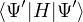 > =+> +. Since Ψ and Ψ′ give the same density, the local term
cancels to give > , which is a contradiction. □
Theorem 2.2.Assuming number-conserving density variations that retain V-representability, the energy
functional has a unique minimum at the ground-state density.
Proof.Consider an external potential v, its hamiltonian H, and its unique ground state Ψ and density n.
After a number-conserving variation, the new wave function Ψ′ can be used with the original hamiltonian
and > by the variational principle. □
These initial proofs by HK have two important assumptions: 1. the ground-state is non-degenerate and 2. the
electron density n(r) is V-representable. The latter is especially sever because reasonable densities were
shown not to be V-representable [40, 41]. Fortunately, M. Levy proved that both assumptions can
be weakened [42]. The HK theorems hold for N-representable densities regardless of ground-state
degeneracy.
Definition 2.2.N representable density A density n(r) is N-representable if it can be obtained from some
many-body wave function of N particles.
While less publicized, HK also pointed out that the exact density functional less the direct/Column contribution
can be calculated from a local energy-density functional gr[n]
G[n] ≡ F[n] −∫drdr′=∫rgr[n],
(2.61)
gr[n] ≡∇r∇r′n1(r,r′)|r=r′+∫dr′,
(2.62)
which is constructed from one- and two-body reduced density matrices n1 and C2. They even went as far as to
relate the leading-order behavior of the density functional to polarizability
G[n] = G[n0] +∫drdr′K(r −r′)ñ(r)ñ(r′) + h.o.,
(2.63)
where ñ is a small number-conserving density variation and the kernel K is related to the polarizability in
reciprocal space
K(r −r′) =∑qK(q)e−iq⋅(r−r′),
(2.64)
K(q) ==,
(2.65)
where α(q) and 𝜖(q) are the polarizability and dielectric constant, respectively. The HK theorems and
limits provide some checks for practical parametrization of the exact density functional. Unfortunately,
they provide no guidance on how one might start to construct numerical approximations to the exact
functional.
2.3.2.2 The Kohn-Sham equations
One year after HK, W. Kohn and L. J. Sham (KS) [43] worked out practical guidelines for constructing
approximations to the exact density functional. KS first partitioned the total energy to highlight the
least-understood “exchange-correlation” term Exc[n].
E =∫drn(r)v(r) +∫drdr′+ T[n] + Exc[n],
(2.66)
where T is a kinetic energy functional. KS then approximated Exc by the corresponding contribution in the
homogeneous electron gas, the local density approximation (LDA)
Exc[n] =∫drn(r)𝜖xc(n(r)).
(2.67)
Next, by minimizing eq. (2.66) with respect to number-conserving density variation, they obtained the
stationary condition for the ground-state density
∫δn= 0.
(2.68)
To solve eq. (2.68), KS assumed that the ground-state density n came from an auxiliary system of
non-interacting electrons, i.e., a Slater determinant. This KS ansatz turns eq. (2.68) into a system of one-particle
equations of non-interacting particles in some effective potential vKSeff determined by the density n(r). Most
practical implementations of DFT use the KS auxiliary-system formulation.
Practical success of the DFT LDA method was not realized until 1981, when J. P. Perdew and A.
Zunger (PZ) [37] parametrized exact quantum Monte Carlo data of the homogeneous electron gas,
obtained by D. M. Ceperley and B. J. Alder [44] the year prior. PZ’s eq. (13-17) define the KS-DFT
method and the LDA we use today. The electron density for spin σ is a sum of occupied spin orbitals
squared
nσ=∑σ∑a=1Nσfaσ|ψaσ(r)|2,
(2.69)
where the occupation numbers faσ∈ [0,1], and the kinetic energy is the sum of contributions from all occupied
spin orbitals of the non-interacting system
Ts[n] =∑σ∑a=1Nσfaσ.
(2.70)
Minimizing eq. (2.66) with the constraint that the spin orbitals remain orthonormal, PZ obtains
.
(2.71)
2.3.2.3 The Band Gap Problem
The Kohn-Sham eigenvalues do not have the same physical meaning as the Hartree-Fock eigenvalues as given by
Koopmans theorem. Thus, a band gap “problem” arises when one compares the HOMO-LUMO gap from KS-DFT
to experimental measurements of the fundamental gap Eg. The eigenvalue of the Kohn-Sham HOMO can be
identified with the ionization energy of an isolated molecule if the exchange-correlation potential vanish at infinity.
This is a special case, because the ionization energy is dominated by the long-range asymptotic behavior of the
1RDM, which is determined by the long-range tail of the electronic density with no contribution from the
short-sighted exchange correlation potential.
When extended to handle systems with fractional electron number, the derivative discontinuity of the exact
density functional is Eg. It has contribution from both the non-interacting kinetic functional Ts[n] and the exact
exchange-correlation functional Exc[n]. The KS HOMO-LUMO gap measures the derivative discontinuity in Ts[n].
However, as shown in Fig. 2.2, the Exc[n] under LDA is smooth, so its contribution to the gap is missing. As a
result, the LDA gap is ∼ 50% that of experiment, showing that the derivative discontinuity in Exc[n] can be of
similar magnitude as the gap and cannot be ignored.
Figure 2.2:A. J. Cohen, P. Mori-Sánchez, and W. Yang [36] explains that the self-interaction error in H2+
binding curve (left panel A) is due to the presence of fractional electron (left panel B), which leads to a
delocalization error when LDA is used.
2.3.2.4 Beyond Local Density Approximation
While extremely successful, the LDA has well-documented deficiencies. As discussed in Sec. 2.3.2.3, LDA
underestimates the band gap due to a lack of derivative discontinuity. Further, it tends to overestimate the binding
energy of molecular systems. This is attributed to the logarithmic divergence of the LDA correlation functional as
density tends to infinity (see eq. (7.55) in Ref. [32]).
The logarithmic divergence of the LDA is largely corrected by the generalized gradient approximation (GGA).
This modification is not as straight-forward as adding an extra term that depends on the gradient of the electron
density ∇n to the exchange-correlation function. An arbitrary choice of the gradient term can distort the xc hole
and break the sum rule that controls its global strength
∫r′n(r′)[g(r,r′) − 1] = −1.
(2.72)
J. Perdew and co-workers overcame this difficulty by introducing a real-space cutoff to the exchange hole. While
the details are technical, the final form of the GGA exchange functional is elegant
ExGGA[n] =∫drn(r)𝜖x(n(r))Fx(s(r)),
(2.73)
where 𝜖x is the LDA exchange function and the scaled gradient
s(r) =.
(2.74)
A simple form for the exchange enhancement factor Fx was given by J. Perdew, K. Burke, and E. Ernzerhof [45]
in 1996. After another careful cutoff on the correlation functional, the immensely popular PBE functional was
constructed. The PBE xc functional takes the same form as eq. (2.73), but with a different enhancement factor: Fxc
instead of Fx. PBE softens molecular bonds relative to the LDA and predicts an order of magnitude more accurate
dissociation energies of many molecules [45].
Unfortunately, both LDA and PBE suffer from a well-known failure of any local and semi-local density
functional theory: the absence of Van der Waals interaction. This interaction is entirely due to the correlation of
density fluctuations and is dominant for two neutral objects with non-overlapping electron densities.
When fluctuation creates an instantaneous dipole moment in one electron distribution, it induces an
anti-aligned dipole moment in the other. The van der Waals interaction is thus attractive and decays as
dipole-dipole interaction strength, , in the separation distance r between the centers of the two
distributions. While KS-DFT relies on the average electron density of a non-interacting system, it is still
possible to include the contribution of Van der Waals interaction in the density functional. Consider
the Coulomb interaction as a perturbation to two widely separated atoms, one can show that the
interaction energy is proportional to a convolution of the density-density response functions of the isolated
atoms
= −∫dr1dr1′∫dr2dr2′
×∫lim0∞χ1(r1,r1′)χ2(r2,r2′) + h.o.,
(2.75)
as written in eq. (7.116) in Ref. [32]. One can then proceed to approximate the density-density response
function using the static electron density, e.g. using the polarizability of the homogeneous electron
gas.
Finally, exact-exchange functionals such as PBE0 and HSE [46] have been developed for atoms having localized
valence electrons, e.g., with d or f angular momentum. These functionals are crucial in the study of magnetism, as
the PBE functional overly favor delocalized electrons and often predict qualitatively wrong magnetic momentum
and spin orderings of transition metals. However, these exact-exchange functionals were never a focus throughout
this thesis, so I will not go into details here.
Chapter 3 Slater-Jastrow wave function
In the previous chapter, I introduced the FN-DMC method, which calculates ground-state properties of a
many-body system starting from a trial wave function ΨT. The accuracy and efficiency of the method depend on the
choice of ΨT. Understanding of the many-body wave function and its connection to physical properties of particular
systems can help us make educated guesses at high-quality trial wave function and perform accurate
simulations. In this chapter, I will describe the most well-understood many-body wave function for electronic
structure, the Slater-Jastrow wave function, and discuss what behavior of electrons we can learn from
it.
The many-body wave function is also interesting in its own right. One goal of studying the many-body wave
function is to understand electron correlation [47]. As P.A.M. Dirac pointed out, knowing the Dirac/Schrödinger
equation and the hamiltonian of the system does not constitute an understanding, because it “leads to equations
much too complicated to be soluble” [48]. Even a simple hamiltonian that contains only pair interactions, e.g., the
Coulomb hamiltonian, can create complex many-body correlations and phase diagrams. Thus, direct studies of
experimental observables, the many-body wave function, and perhaps properties the exact density functional will be
more informative.
3.1 Historic Overview
In condensed matter, the development of many-body wave function took off in the study of homogeneous quantum
liquids, e.g., liquid helium and the homogeneous electron gas, a.k.a. jellium. Most studies made use of the
variational principle eq. (2.32), which states that given a Hamiltonian ℋ, any normalized trial wave function ΨT
will have an energy value no less than that of the true ground state ≥. This principle
allowed the pioneers to make educated guesses, then check their quality using the expectation value of
ℋ
.
As early as 1934, E. Wigner [49] noted that by introducing a “hole” in the correlation function of opposite-spin
elections, one can improve the Slater determinant and lower its energy value in the homogeneous
electron gas. Although, this hint was not acted on until much later. In 1940, A. Bijl [50] found that the
logarithm of the wave function of many-interacting particles is size-extensive. This logarithm can be
expressed as a perturbation expansion involving one- and two-electron terms and is convergent in the
thermodynamic limit. Unfortunately, this work went unnoticed for 30 years while others independently
developed similar ideas. Expanding the logarithm of the wave function is a general idea that later became
known as the Bijl-Dingle-Jastrow-Feenberg expansion [51] for historical reasons, which I will now
describe.
In 1949, R. B. Dingle [52], while estimating the zero-point energy of hard spheres, came up with a product of
exponential functions as a variational wave function by considering symmetries and limits. In 1955, R.
Jastrow [53] generalized the Dingle pair-product wave functions to indistinguishable particles with
Bose and Fermi statistics. To generalize to fermions, he multiplied by a Slater determinant to enforce
antisymmetric permutation symmetry. Thus, the Slater-Jastrow wave function was born. While this thesis
is mostly focused on the Slater-Jastrow wave function for electronic matter, the idea of separating
particle statistics from correlation is general. The Slater-Jastrow wave function is the fermion variant of
eq. (3.1)
Ψ = ,
(3.1)
where I, P, D are identity, permanent, and determinant, respectively. {ϕi} is a set of single-particle wave
functions and U consists of pair terms only
U =∑i<ju(rij).
(3.2)
The minus sign in the definition of eq. (3.1) is intentional. At high temperature, |Ψ|2 for distinguishable
particles becomes the Bolzmann distribution eq. (2.6). When only pair interaction is present, the pair contribution
to U has the same sign as the potential (see Chapter 6.6 in Ref. [24])
limβ→0u(rij) =βv(rij).
(3.3)
Some important improvements to eq. (3.1) came from the study of bosons rather than fermions.
In 1956, R.P. Feynman and M. Cohen [54] found it crucial to include the effect of back flow to accurately
describe rotons in liquid helium. A roton is the quantum analog of a microscopic vortex ring. When an atom moves
through the ring, it triggers a returning flow far from the ring, a.k.a. back flow. R.P. Feynman first estimated
the energy-momentum curve of liquid helium using a permanent of plane wave orbitals in 1954, but
found the roton energies severely over-estimated [55]. It is only after the introduction of back flow into
the trial wave function did the roton energy reduce to a reasonable value, in qualitative agreement
with the phenomenological theory of Landau and with experiment [54]. In 1961, F.Y. Wu and E.
Feenberg [56] related the Jastrow pair function, u(r) in eq. (3.2), to the pair correlation function of liquid
helium
u(r) = g(r) −∫dke−ik⋅r,
(3.4)
where ξ ≈ 0.97 gave accurate results under the superposition approximation. Direct relation between
experimentally measurable correlation functions and the wave function is an important avenue to glean
understanding from the many-body wave function. Similar ideas arose in the study of fermions in the same
year.
Also in 1961, T. Gaskell [57] derived a Jastrow pair function for homogeneous electron gas from perturbation
calculation of its pair correlation function. He expressed the Jastrow pair function in collective coordinates and
derived an analytical formula using the random phase approximation (RPA). By minimizing the total energy in the
long wavelength limit, Gaskell found an accurate Jastrow pair function, having correct limits at both short and long
wavelengths. This Gaskell RPA wave function proved particularly useful in the study of the homogeneous electron
gas and will be discussed in Sec. 3.4, then extended in Sec. 3.5. Remarkably, this wave function is accurate in
both 2D and 3D. Using the Gaskell RPA wave function as trial function, in 1980, D. M. Ceperley and
B. J. Alder [44] found the ground state of the homogeneous electron gas in 3D using exact QMC
simulations.
A common theme of these early successes is guessing and checking of correlation. One guesses that a many-body
correlation is important, incorporates said correlation into the wave function, then checks if the energy value is
lowered and/or correlation functions get closer to experiment. In contrast, recent improvements to the many-body
wave function rely heavily on numerical optimization of general wave function forms with many parameters.
Examples include orbital rotation in a single determinant, multi-determinant expansion, iterative back flow [58],
and neural network. As we move towards these complicated wave functions, it will likely become increasingly
difficult to extract physical understanding directly from the wave function. This chapter will serve as a summary of
some physical insights we have been able to grasp from the Slater-Jastrow wave function. I hope some of
these will remain useful for more complex wave function forms. After some definitions, I will first
discuss the short-range asymptotic behavior of the two-body contribution, i.e., the cusp condition
in Sec. 3.3. Second, I discuss the two-body long wavelength behavior by studying the Gaskell RPA
Jastrow in Sec. 3.4 for one-component system, then extend it to multi-component system in Sec. 3.5.
Third, in Sec. 3.6, I show observables that can be calculated from the Slater determinant in plane
wave basis, namely the momentum distribution from one-particle reduced density matrix (1RDM)
in Sec. 3.6.1 and the static structure factor from two-particle reduced density matrix (2RDM) in
Sec. 3.6.2.
3.2 Definitions
Definition 3.1. The Fourier Transform of a 3D function in coordinate space is defined as
f(k) =∫d3reik⋅rf(r).
(3.5)
The above Fourier transform convention eq. (3.5) defines its inverse
f(r) =∫e−ik⋅rf(k).
(3.6)
The consistency of eq. (3.5) and (3.6) can be checked using the Coulomb potential v(r) = and
v(k) = .
In a finite cell of volume Ω, momentum states are discretized. Each state takes up in reciprocal space.
Therefore the inverse Fourier transform (3.6) becomes
f(r) =∑ke−ik⋅rfk.
(3.7)
Definition 3.2.The collective coordinates of N particles of species α is the Fourier transform of their
instantaneous number density
The collective coordinates provide a fixed basis for many-body functions in reciprocal space. Consider N
particles in a cell of volume Ω interacting via an isotropic pair potential v(r). The potential energy
V =
∑i<jv(rij) =∑i≠jv(rij)
=
∑kvk∑i≠je−ik⋅(ri−rj)
=
∑kvk.
(3.9)
When generalized to multiple species, eq. (3.9) becomes
V =
∑α,β∑i=1Nα∑j=1Nβ,(j,β)≠(i,α)vαβ(|riα−rjβ|)
=
∑kvkαβ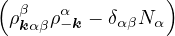.
(3.10)
For particles interacting via the Coulomb pair potential
vαβ(r) =,
(3.11)
where Qα and Qβ are the charges of species α and β, respectively.
Definition 3.3.Jastrow Pair Function: The general form of a Jastrow wavefunction containing two-body terms
is
Ψ =exp,
(3.12)
where
U =
∑α,β∑i=1Nα∑j=1Nβ,(j,β)≠(i,α)uαβ(|riα−rjβ|)
=
∑kαβukαβ.
(3.13)
uαβ(r) is the Jastrow pair function. In the high temperature limit, uαβ(r) = . ukαβ is the Fourier
transform of uαβ(r) in the unit cell having volume Ω as defined by eq. (3.7).
Definition 3.4.A Slater determinant is a many-body wavefunction ansatz for the ground state of a collection of
same-spin fermions. It is the anti-symmetrized version of a product wavefunction ansatz for distinguishable
particles.
Ψ =∑𝒫(−1)𝒫,
(3.14)
where N is the number of fermions, r1,r2,…,rN are their spatial coordinates. 𝒫 is a permutation of the particle
indices 1,2,…,N. ϕ1,ϕ2,…,ϕN are a set of one-body wave functions (a.k.a. orbitals).
Consider two non-relativistic distinguishable particles having masses m1 and m2 interacting via a pair potential
v(r). The Schrödinger equation in the center-of-mass coordinate is
ψ = Eψ,
(3.15)
where λ = , and μ = (m1−1+ m2−1)−1. The ground-state wave function
ψ =exp(−u(r))
(3.16)
should have a stationary local energy
EL≡= v(r) + λ∇2u(r) − (∇u(r))2
= v(r) + λ(u′′+) − λu′2= const.,
(3.17)
where d is the number of spatial dimensions. We see that the laplacian term in the kinetic energy has a
potentially divergent term at r = 0. This term can respond to the potential and keep EL stationary, even if v(r) has
a divergence at r = 0, e.g., the Coulomb potential. Suppose the two particles have charges q1, q2, and v(r) = q1q2∕r,
the condition for stationary EL is
limr→0(q1q2+ λ(d − 1)u′) = 0 ⇒ u′(0) = −
(3.18)
For electron-electron interaction in Hartree atomic units m1= m2= 1, so λ = 1 and u′(0) = − in 3D. This is
the cusp condition for unlike-spin electron pair. For same-spin pair, the two particles are indistinguishable and the
laplacian for each particle contributes a copy of the divergent term, thus u′(0) = −. For an electron-ion pair in the
clamped-ion approximation (m2→∞)
u′(0) =,
(3.19)
where Z is the atomic number of the ion. Imposing the cusp conditions on a trial wave function greatly reduces
the variance of the local energy and improves the efficiency of a QMC calculation. The electron-ion cusp eq. (3.19)
is the most important one to maintain, because the wave function amplitude around an ion is high and many
samples from the MC algorithm will have some electron close to an ion. In contrast, one rarely samples a
configuration with two electrons close together due to strong electron-electron repulsion at density relevant for
materials science, e.g., bulk silicon. However, at high density, electron-electron correlation is weak relative to kinetic
energy, so the electron-electron cusp condition is important to maintain. Nevertheless, the effect of
imposing the electron-electron cusp condition is typically less pronounced than that of the electron-ion
one.
3.4 Gaskell RPA Jastrow
The RPA Jastrow potential electron gas in 3D given by T. Gaskell [29, 57, 59, 60] is
2ρukRPA= −1− S0(k)−1,
(3.20)
where the νk is the Coulomb potential in reciprocal space and 𝜖k is the energy-momentum dispersion relation.
For non-relativistic electrons in 3D, νk= and 𝜖k= using Hartree atomic units. S0(k) is the static structure
factor of the free Fermi gas [61]
S0(k) = Θ(2kF− k) + Θ(k − 2kF).
(3.21)
Gaskell [57] used an integral identity to obtain an approximate relation between the Jastrow potential and the
static structure factor
2ρuk≈ S−1(k) − S0−1(k).
(3.22)
Therefore, the RPA structure factor can be read off of ukRPA in eq. (3.20) via eq. (3.22)
SRPA(k) = −1∕2,
(3.23)
where kF is the Fermi k-vector. For unpolarized electrons kF= 3π2ρ = 1∕3.
Equation (3.23) is exact in the long wavelength k → 0 limit. Taylor expanding eq. (3.23) around
k = 0
S(k) =−+ O,
(3.24)
where the plasmon frequency ωp== .
While Gaskell originally derived eq. (3.20) using perturbation theory, one can derive the same form
by minimizing the variance of the local energy in the long wavelength limit, as shown in the next
Sec. 3.5.
3.5 Multi-Component RPA Jastrow
Based on notes from D. M. Ceperley dated Sep. 1980
Given Jastrow wavefunction Ψ =exp(−U), where
U =∑i<ju(rij) =∑α,β∑i=1Nα∑j=1Nβ,(j,β)≠(i,α)uαβ(|riα−rjβ|),
(3.25)
and non-relativistic Coulomb hamiltonian
H =T+ V =∑α∑j=1Nα− λα∇jα2+∑α,β∑i=1Nα∑j=1Nβ,(j,β)≠(i,α)vαβ(|riα−rjβ|),
(3.26)
where α,β label particle species, i,j label particle positions. λα= , vαβ(r) = . In terms of pair
potentials and collective coordinates (see Fourier convention eq. (3.5) and its corollaries eq. (3.6-3.8))
U =∑kαβukαβ,
(3.27)
V =∑kαβvkαβ.
(3.28)
The goal of this section is to obtain good Jastrow pair potentials ukαβ. The strategy is to minimize the variance
the local energy EL≡ Ψ−1HΨ = T + V , where
T =
∑γ− λγ∑l=1Nγ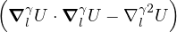.
(3.29)
In the following, I will detail the few steps needed to obtain the RPA Jastrow potentials. First, we express the
local energy in terms of the collective coordinates eq. (3.8). Second, we find the equations that make the local
energy invariant to changes in the collective coordinates. Third and finally, we solve these equations for one and two
component systems. Assume uαβ= uβα and uk= u−k.
3.5.1 Local Energy of Jastrow Wavefunction
The gradient, laplacian, and gradient squared of eq. (3.27) are
∇lγU =
∑kα(ik)ukγα
(3.30)
∇lγ⋅∇lγU =
−∑kαk2ukγα
(3.31)
∇lγU ⋅∇lγU =
−∑kqαβk ⋅qukγαuqγβ×
ei(k+q)⋅rρ−kαρ−qβ− ei(k−q)⋅rρ−kαρqβ−
ei(q−k)⋅rρkαρ−qβ+ e−i(k+q)⋅rρkαρqβ
.
(3.32)
Summing over l turns eik⋅rlγ into ρkγ in eq. (3.31) and (3.32). Thus
∑l=1Nγ∇lγ⋅∇lγU =
−∑kαk2ukγα
(3.33)
∑l=1Nγ∇lγU ⋅∇lγU =
−∑kqαβk ⋅qukγαuqγβ×
ρk+qγρ−kαρ−qβ− ρk−qγρ−kαρqβ−
ρq−kγρkαρ−qβ+ ρ−(k+q)γρkαρqβ
.
(3.34)
Equation (3.34) contains terms that couple three wave vectors, i.e. O(ρ3). In the spirit of RPA, we will drop all
such mode coupling terms. Note ρ0γ= Nγ, and use uk= u−k
∑l=1Nγ∇lγU ⋅∇lγU =
∑kαβk2ukγαukγβ.
(3.35)
Finally, sum over γ with −λγ to obtain terms in the kinetic energy. To simplify later assembly of
the local energy, rename dummy variables α,β,γ such that every O(ρ2) term contains ρkαρ−kβ (use
uαβ= uβα)
∑γ− λγ∑l=1Nγ∇lγU ⋅∇lγU =
−∑kαβγλγk2ukγαukγβρkαρ−kβ,
(3.36)
∑γ− λγ∑l=1Nγ∇lγ⋅∇lγU =
−.
(3.37)
Finally, the local energy can be assembled
EL=∑kρkαρ−kβ+.
(3.38)
3.5.2 Equations that define the RPA Jastrow Pair Potentials
Variance of EL can be minimized by setting the ρkαρ−kβ term to zero. Define 𝜖kα≡ λαk2
−ukαβ−∑γ𝜖kγukαγukβγ= 0.
(3.39)
Equation (3.39) can be solved for each k independently. We no longer need the collective coordinates or the
label k. It is now safe to recycle the symbol ργ≡ to mean the number density of species γ. Simplify eq. (3.39)
to
−(𝜖α+ 𝜖β)uαβ−∑γργ𝜖γuαγuβγ= 0.
(3.40)
3.5.3 Solving for the RPA Jastrow Pair Function
One Component
For a one-component system, eq. (3.40) becomes a quadratic equation of one variable u11
− 𝜖1u11− ρ1𝜖1u112= 0.
(3.41)
The solution is
2ρ1u11= −1 +,
(3.42)
which agrees with Gaskell’s solution eq. (3.20), except S0(k) is replaced by 1. Notice, if one uses a different
Fourier convention, replacing volume Ω with number of particles N in eq. (3.27)
U =∑kαβũkαβ,
(3.43)
then the density ρ drops from the expression for ũ, e.g., eq. (8) in Ref. [29] and eq. (3) in Ref. [6]
2ũ= −1 + (1 + 2vk∕ek).
(3.44)
Two Components
For two-component system, eq. (3.40) becomes a set of 3 coupled quadratic equations
(3.45)
Suppose species 2 has infinite mass λ2→ 0, thus no dispersion 𝜖2= 0. Then we should ignore the last equation
(α = β = 2), which determines u22 (when u12= 0). The remaining equations allow us to solve for the Jastrow pair
potentials u11 and u12
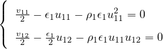.
(3.46)
The first equation provides the same Jastrow potential as in the one-component case eq. (3.42). The second
equation can be used to solve for u12
(1 + 2ρu11)𝜖1u12= v12
⇒
u12=.
(3.47)
For completeness, the exact solutions are (by Mathematica)
2ρ1u11=
− 1 +,
(3.48)
u12=
,
(3.49)
2ρ2u22=
− 1 +,
(3.50)
where
A =
(1 + a11)(1 + a22) − a122,
(3.51)
B =
(1 + a22) +(1 + a11) ± 2,
(3.52)
with
.
(3.53)
3.6 Slater Determinant in Plane Wave Basis
Based on notes from D. M. Ceperley dated Aug. 1 2018
When the orbitals are expressed in plane wave basis
ϕi(r) =∑kcikeik⋅r.
(3.54)
We require the orbitals to be orthonormal
∫Ωdrϕi(r)∗ϕj(r) = δij⇒ Ω∑kcik∗cjk= δij.
(3.55)
We can verify that the determinant written in eq (3.14) is normalized
≡
∫dr1…drNΨ∗Ψ
=
∑𝒫,𝒫′(−1)𝒫(−1)𝒫′
=
∑𝒫,𝒫′(−1)𝒫(−1)𝒫′
=
∑𝒫= 1.
(3.56)
The key step in eq (3.56) is to separate and distribute the many-body integrals into the product.
Many properties of the slater determinant can be evaluated analytically. Here we focus on reciprocal-space
properties accessible by scattering experiments: the momentum distribution n(k) and the static structure factor
S(k).
3.6.1 Momentum Distribution
The momentum distribution is the Fourier transform of the 1RDM (eq. (5.9) in Ref. [24]). The 1RDM can be
calculated from the many-body wavefunction
ρ(x,x′) = N∫dr2…rNΨ∗(x,r2,…)Ψ(x′,r2,…).
(3.57)
Given a Slater determinant wavefunction eq (3.14), all the dr integrals can be done analytically
ρ(x,x′) =
N∫dr2…drN
=
∑𝒫,𝒫′(−1)𝒫(−1)𝒫′
=
∑𝒫ϕ𝒫1∗(x)ϕ𝒫1(x′)
=
∑𝒫1=1Nϕ𝒫1∗(x)ϕ𝒫1(x′).
(3.58)
Notice that the diagonal (x = x′) of the 1RDM is particle density. Given PW orbitals eq (3.54)
n(k) =
∫drdr′′e−ik⋅r′′ρ(r,r −r′′)
=
∑i,g,g′cig∗cig′∫drdr′′e−ig⋅reig′⋅(r−r′′)
=
∑i,g,g′cig∗cig′Ωδg,g′Ωδg′,−k
=
∑i=1N|ci,−k|2.
(3.59)
Given the current definitions, ∫dkn(k) = 1 for an infinite system. In practice, one bins the Fourier coefficient
squared of all occupied orbitals at allowed momenta of the supercell.
3.6.2 Static Structure Factor
The static structure factor is the density-density correlation function in reciprocal space
Similar to eq (3.56) and eq (3.59), 𝒫l= 𝒫′l,∀l≠1,2. Define 𝒫1= i, 𝒫2= j, then 𝒫1,2′ = i,j contributes a
positive term, and 𝒫1,2′ = j,i contributes a negative term. Thus eq (3.61) simplifies
=
∑i,j∫dr1dr2eiq⋅(r1−r2)×
=
∑i≠j∫dr1e−iq⋅r2ϕj∗(r2)ϕj(r2)
=
∑i≠j,
(3.62)
where we have defined the matrix of integrals
mij(q) ≡∫drϕi∗(r)ϕj(r)eiq⋅r.
(3.63)
Notice mij∗(q) = mji(−q), thus
Sq=
1 +∑i≠j
=
1 +.
(3.64)
3.6.3 Example: Free Fermions
The ground-state wavefunction of non-interacting fermions is a determinant of plane waves. The first N plane-wave
orbitals with the lowest momenta are filled. In case of degeneracy, the wavefunction will have a non-zero net
momentum.
Simply stated, the free fermion wavefunction is a determinant eq (3.14) whose orbitals each have a single Fourier
component
cik=δk,ki.
(3.65)
We see from eq (3.59) that the momentum distribution n(k) of the free fermions is a step function, which is
constant within the Fermi surface and zero outside. As for the static structure factor S(k), first note that the matrix
of integrals mij(q) eq (3.63) is sparse
Eq (3.66) has a simple geometric interpretation. Namely, mij(q) is non-zero only if q connects two occupied
plane wave orbitals. In the thermodynamic limit, the geometric interpretation allows S(k) to be calculated from a
simple integral for the overlapping volume of two spheres
S(k≠0) =
1 −−12∫q∕2kFdkπ(kF2− k2)
=
.
(3.68)
3.7 Beyond Slater-Jastrow
One way to systematically obtain more accurate wave functions than Slater-Jastrow is to expand the many-body
wave function in a basis of determinants. This configuration interaction (CI) method is routinely used in quantum
chemistry to study molecules. The CI method is especially effective when the correlation in the ground state is
mostly static in nature, e.g., in benzene molecule where the ground-state wave function is approximately the equal
superposition of six non-interacting determinants. This method is less successful in bulk calculations due to
difficulties in performing finite-size extrapolation. Specifically, a fixed-length determinant expansion
is more accurate for a small system than a large one. Thus, properties such as the total energy are
not size-extensive and cannot be extrapolated to the thermodynamic limit using known asymptotic
formula.
Another method for systematically improving the many-body wave function is to use the generalized
Feynman-Kac formula (eq. (6.12) in Ref. [24]), which is intimately related to the DMC method (eq. (24.23) in
Ref. [24])
Ψ0=ΨT2,
(3.69)
where ΨT2 denotes average over drift-diffusion random walks guided by ΨT eq. (2.28). EL(Rt;ΨT) is
the local energy of the trial wave function at walker position Rt during the random walk. If ΨT is
a good approximation for the ground state Ψ0, then imaginary time propagation can be cut off at
a small equilibrium “time” τ and eq. (3.69) has a compelling physical interpretation eq. (6.13) in
Ref. [24]
lnΨ0(R0) ≈lnΨT(R0) − τ[ΨT2(R0) − E0].
(3.70)
Equation (3.70) says the correction to the exponent of ΨT at R0 is proportional to the average of its local
energy over a small region around R0 having size O() in dN-dimensional space. This observation is
quite useful for practitioners of the DMC method, because it implies longer projection time is needed
for:
larger system, because the space over which EL needs to be averaged increase with N.
heavier particles, because they have smaller quantumness λ, thus smaller diffusion constant.
long-range properties, because the effect of projection is local and expands slowly with projection time.
Finally, the Feynman-Kac formula was shown to be capable of suggesting compact wave function that accurately
capture electron correlation starting from a simple initial guess [10].
Chapter 4 Finite-size Effects
In the previous two chapters, I introduced the ground-state QMC method and the trial wave function needed to
make it accurate for a well-defined electron-ion Hamiltonian. However, practical QMC simulations cannot handle
the hamiltonian governing O(1023) particles found in typical condensed matter experiments. While we use periodic
boundary condition to eliminate surfaces from our simulations, there is significant remaining difference between the
properties of this model system and those from experiment.
In this chapter, I will describe common types of finite size effects encountered in electronic structure simulations
and a few correction schemes. I will begin discussion from the most general correction that works for quantum and
classical systems at zero and finite temperature: the static structure factor correction to the potential energy. From
there, the method is extended to correct kinetic energy using the momentum distribution, and in the quantum case,
using the Jastrow pair function.
4.1 Correction to the potential energy
4.1.1 General Theory
Given a simulation using periodic boundary conditions, the accessible momenta are quantized. As the simulation
cell is enlarged, the grid of accessible momenta becomes finer until it grants access to the full continuum of
momentum space in the thermodynamic limit. By considering the difference between this infinite system and the
finite simulation cell, we can understand finite-size effects and attempt to correct them. Consider an orthorhombic
box with side length Lx along the x direction. The momentum along the x direction must take discrete values
kx=nx, where nx∈ ℕ. Similarly discretization exist along the other directions. In a simulation
where particles interact via the Coulomb pair potential v(r) = , the total potential energy of the
system
V ≡ Vbackground+∑i=1N∑L∑j=1Nv(|xi−xj−L|),
(4.1)
where L loop over the supercell lattice. The sums loop over all pairs of particles in the infinite system. This
equation can be equivalently written in reciprocal space as
VN≡ V∕N = vM+∑k≠0vkS(k),
(4.2)
where vk= is the Fourier transform of the Coulomb pair potential in d spatial dimensions. vM is the
Madelung constant, which combines the electrostatic energy of an infinite periodic array of charges on L with a
neutralizing background. Equation (4.2) looks different than its original proposal in Ref. [62] due to a difference in
Fourier transform convention. Here, I follow the definitions eq. (6) and (7) in Ref. [60], which are reiterated in
Sec. 3.1.
Suppose S(k) is converged, i.e., does not change with system size, then the only difference between the
infinite-system and the finite-size potential energies is the replacement of the sum in eq. (4.2) by an
integral
ΔVN≡ V∞− VN= S(k).
(4.3)
Equation (4.3) is not practical, because limk→∞S(k) = 1 and both the sum and the integral diverge.
Fortunately, large k corresponds to short-range interaction, so its contribution to finite-size error vanish rapidly with
system size. Thus, we can truncate the large-k part of eq. (4.3) with little effect on its value. This can be achieved
either using an explicit suppression factor e−𝜖k2 as done in eq. (24) of Ref. [63] by Drummond et al., or splitting
out the long-range part of the Coulomb potential as done in eq. (30) of Ref. [60] by Holzmann etal..
While the Madelung term in eq. (4.2) is specific to charged systems, the idea of finite-size error as a quadrature
error eq. (4.3) applies to any pair potential v(r). This error can be accurately corrected given converged pair
correlation functions in real g(r) and reciprocal S(k) spaces.
4.1.2 Homogeneous electron gas
In the case of the electron gas, more progress can be made due to known long-wavelength behavior of the wave
function. The dominant contribution to eq. (4.3) comes from the volume element around k = 0, because vk diverges
there.
ΔVN≈∫S(k).
(4.4)
Bohm and Pines [64] discovered that the many-body wave function of the electron gas can be factored into
short-range and long-range contributions, where the long-range part describes weakly coupled collective modes
(plasmons) [60, 65]
Ψ = Ψs.r.exp.
(4.5)
In the random phase approximation (RPA), we ignore the mode coupling terms, such as w(k,q), and find
the Gaskell RPA static structure factor eq. (3.23). Using the leading-order approximation of S(k)
eq. (3.24) in the finite-size correction formula eq. (4.4), we obtain the main correction to the potential
energy
where kF≡∕rs, C2D= 3.9852 and 3.9590 for square and hexagonal cells, respectively [63]. Equation (4.9)
differs from eq. (60) in Ref. [63], because Ref. [63] erroneously used the dimensionless form of the RPA structure
factor rather than its Hartree atomic unit form eq. (4.8).
4.1.3 Inhomogeneous system
In a real crystal, valence electrons interact with a periodic arrangement of localized ionic cores rather than a
homogeneous neutralizing background of positive charge. In such inhomogeneous systems, it is instructive to
separate the static and fluctuating contributions to the static structure factor
S(k) ≡=+⟨ρk⟩⟨ρ−k⟩.
(4.10)
Figure 4.1:Fluctuating and static contributions from valence electrons in the conventional cell of bulk silicon.
As shown in Fig. 4.1, the static part due to charge density ρk is non-zero only at reciprocal lattice of the
primitive cell of the underlying crystal structure, whereas the fluctuating part varies smoothly from 0 to 1. Its value
within the missing k = 0 region (red area in Fig. 4.1) can be used to correct the potential energy to leading order
following eq. (4.4). Changes in the charge density with system size is a higher-order effect and is small
compared to the total potential energy [67]. However, as shown in Ref. [68], this static contribution
becomes important when energy differences are taken, such as in the calculation of the fundamental
gap.
Even in an insulator, eq. (3.23) still works well at k ≪ kF, but the short-range contribution S0(k) no longer
comes from a simple determinant of plane waves. Dielectric screening suppresses long-range fluctuation and changes
the leading-order behavior of S(k) from eq. (3.24) to eq. (7) in Ref. [68]
S(k) ≈(1 − 𝜖k−1)1∕2,
(4.11)
so long as only one excitation dominates the dynamic structure factor.
4.2 Correction to the kinetic energy
4.2.1 From momentum distribution
The kinetic energy can be calculated as the second moment of the momentum distribution
TN≡ T∕N =∫e(k)nN(k),
(4.12)
where the dispersion of non-relativistic particles
e(k) =k2,
(4.13)
and nN(k) is the momentum distribution of these particles at the given system size N. It is crucial to
distinguish the finite-size nN(k) from its thermodynamic limit n∞(k), because it is a nonlocal quantity that
converges slowly with system size [59]. Similar to eq. (4.3), the finite-size correction to the kinetic
energy
ΔTN= −.
(4.14)
The key difficulty in using eq. (4.14) is finding a reasonable approximation to n∞(k). Some progress can be
made by analyzing the Monte Carlo estimator for the Fourier transform of the momentum distribution, i.e. the
off-diagonal one-particle density matrix [69]
n(r) = |Ψ|2,
(4.15)
where R denotes the positions of all N particles, and the notation “: ri→ r” means that particle i is moved
from ri to r. As noted by W.R. Magro and D.M. Ceperley [70], direct application of eq. (4.15) with periodic
boundary condition can result in superfluous contributions, because all periodic images of particle i are moved. The
images will contribute to the ratio in eq. (4.15) if Ψ has long-range components, e.g., eq. (4.5). Chiesa et al. [65]
and Holzmann et al. [59] later used this observation to design a finite-size correction to the momentum distribution
and the kinetic energy. To leading-order [59]
n∞(k) − nN(k) ≈∫,
(4.16)
where uq is the Jastrow pair function in the wave function eq. (4.5). As shown in Fig. 8 of Ref. [71], the
leading-order correction to n(k) works well for lithium. Further, Table III in the Supplemental materials of
Ref. [71] shows that the corrected nN(k) can be used to accurately correct the finite-size error in the kinetic energy
using eq. (4.14). To achieve this good result for a metal with a sharp Fermi surface such as lithium, it is crucial
to densely sample momentum space while preserving the Fermi surface using grand-canonical twist
averaging.
4.2.2 From wave function
Instead of using the relation between kinetic energy and the momentum distribution eq. (4.12), one can
directly analyze the QMC estimator for kinetic energy to find its finite-size correction. The VMC
estimator for the kinetic energy of a Slater-Jastrow wave function Ψ = De−U is (from eq. (14) of
Ref. [60])
TNV MC=≡ TND+ TNU.
(4.17)
The dominant finite-size correction in the determinant term is due to one-particle “shell filling” effects, whereas
the dominant correction in the Jastrow term is due to long-range two-particle correlation. I will now discuss these
two effects in turn.
4.2.2.1 Single-particle “shell filling” effect
If the orbitals in the determinant are from some effective one-particle theory such as HF or KS-DFT, then they are
solutions of some effective one-particle potential veff
ϕn(r) = 𝜖nϕn(r).
(4.18)
Thus, one can work out the determinant contribution to the kinetic energy
TND≡−∑i=1N= ,
(4.19)
by eq. (19) in Ref. [60]. As the number of electrons is increased, the kinetic contribution eq. (4.19) increases by
the energies of the new orbitals being occupied. Consider the ideal Fermi gas in a 2D square box. As the number of
same-spin particles increase from N = 2 to 5, the first shell of states in reciprocal space become filled.
They all have the same single-particle energy, so the total kinetic energy increases linearly with N.
However, when one adds a 6th particle, it increases the total energy by twice the amount as one in the
first shell. As shown in Fig. 4.2, this shell filling effect causes oscillation in the kinetic energy as a
function of the number of particles, making size extrapolation difficult. It can be drastically reduced by
adopting canonical twist averaged boundary conditions (TABC), where the number of particles is
the same across all twists. Further, grand-canonical twist averaged boundary condition (GC-TABC),
where the number of particles change according to the exact Fermi surface, can exactly remove this
single-particle finite-size effect. Finally, there is another “pocket” method which reduces the number of
twists needed. Within a pocket in reciprocal space, the orbitals in the determinant smoothly acquire a
phase as the twist is varied. Once these pockets are mapped out, one can perform one calculation
per pocket and weigh it by the volume of the pocket to exactly remove the one-particle finite-size
error [60].
Figure 4.2:Relative error of total energy vs. number of particles with PBC (up triangles) and TABC (squares)
in 2D and 3D [72]
4.2.2.2 Two-body size effect
Using the RPA Jastrow pair potential from eq. (4.5), its contribution to eq. (4.17) becomes
TNU≡≈∑k≠0ρuku−kS(k),
(4.20)
by eq. (33) in Ref. [60]. Recall the general relation between S(k) and u(k) eq. (3.22)
2ρuk≈ S−1(k) − S0−1(k).
(4.21)
Since S−1(k) diverges faster than S0−1(k) as k → 0, eventually 2ρuk≈ S−1(k). Thus, to leading-order
eq. (4.20) becomes
TNU≈∑k≠0e(k)uk,
(4.22)
which should be compared with eq. (4.2) for potential energy. Thus, the procedure to correct the two-body
finite-size error in the kinetic energy is analogous to the potential correction scheme eq. (4.3)
ΔTN≡ T∞− TN= u(k),
(4.23)
where u(k) is an interpolation of the converged Jastrow pair potential, which can be approximated using the
converged static structure factor in the long wavelength limit.
4.2.2.3 Finite-temperature correction
Based on notes from D. M. Ceperley At finite temperature and under the RPA, the long-range part of the action can be optimized to minimize the
variance of the local energy, resulting in
2ρuk= Q(k,β)−1tanh− S0(k,β)−1,
(4.24)
where β is inverse temperature, e(k) = λk2 is the dispersion of the particle, ρ = N∕Ω is density, and S0(k,β) is
the non-interacting structure factors.
Q(k,β) ≡−1∕2.
(4.25)
Q(k,β) reduces to Gaskell RPA S(k) as β →∞. Since limx→∞tanh(x) = 1, eq. (4.24) becomes eq. (3.22) in
this limit. Assuming the relation between S(k) and uk eq. (3.22) holds, the finite-temperature RPA structure factor
is
S(k,β) = Q(k,β)∕tanh.
(4.26)
Equations (4.24) and (4.26) can be used to derived leading-order finite-size corrections to the kinetic and
potential energies using eq. (4.23) and (4.3), respectively.
Chapter 5 Dynamic-ion DMC Study of Solid Hydrogen at Megabar Pressures
5.1 Introduction
The properties and phase transitions of hydrogen under megabar pressures are important in diverse
fields of study. For astronomy, models of the interior of gas giants such as Jupiter and Saturn depend
critically on the nature of the molecular liquid to atomic liquid transition (LLT), namely whether it is
first-order or continuous [12, 73]. For condensed matter, metallic hydrogen holds promise for a room
temperature conventional (BCS) superconductor [74, 75]. For computational physics, hydrogen remains an
important benchmark for both electronic structure [76] and ion dynamics methods. With no need for a
pseudopotential, simulations of hydrogen avoid a significant source of bias. However, the low mass of the
nuclei necessitates quantum treatment of the lattice degree of freedom, often beyond the harmonic
approximation.
Figure 5.1:Partial phase diagram of hydrogen on log-log scale [77].
Established experimental results on high-pressure hydrogen are limited. At room temperature and below,
diamond anvil cell (DAC) is the dominant apparatus to achieve such high pressures. Small size of the cell and
fragility of the sample limit experimental probes to low-power optics such as infrared and Raman spectroscopy[78].
Hydrogen is a weak scatterer of X-Rays [79], thus excluding this excellent tool for structural determination in most
experiments. Only recently has X-ray analysis been performed up to 254 GPa [80, 81]. At high temperatures, shock
wave compression is the main method to achieve megabar pressures. Due to the transient nature of
theses experiments, acquiring and analyzing shock-wave data is challenging. Most notably, one cannot
directly measure temperature, which may cause misinterpretation of raw data [5, 82, 83]. Given the
experimental difficulties, predictive simulations are highly desirable as they can inform and verify
experiments [4].
Simulation of high-pressure hydrogen is also challenging. Without experimental structural information from
X-ray, many theoretical calculations have been performed on structures found in density functional theory (DFT)
random structure searches [84]. Constrained by computational cost, these searches are limited to classical protons,
causing the methods to miss, for example, saddle-point structures that can be stabilized by nuclear quantum
effect [85]. Predictive simulations of hydrogen require accurate methods both in the description of the
electronic ground-state Born-Oppenheimer (BO) potential energy surface (PES) and in the inclusion of
nuclear quantum effect beyond the quasi-harmonic approximation. The popular Perdew-Burke-Ernzerhof
(PBE) density functional in DFT erroneously predicts some molecular structures to be metallic [3].
However, its use in conjunction with Classical molecular dynamics (MD) results in reasonable transition
pressure for the LLT at certain temperatures due to error cancellation [86]. This and other fortuitous
cancellations of error has led many to believe that the PBE functional provides a good description of
solid hydrogen and caused much confusion in the community. PBE predicts a conductive molecular
structure above 200 GPa, a molecular-to-atomic transition around 300 GPa [2], and low-temperature
superconducting liquid. All these predictions contradict experimental evidence. Systematic benchmark
of the PES from various DFT functionals against QMC found the vdW-DF1 functional to be the
most accurate for molecular hydrogen at megabar pressures [67]. However, this functional has yet to
gain widespread adoption due to its higher computational cost and lower popularity compared to
PBE.
In this chapter, I will focus on the solid phases of hydrogen. Sec. 5.1.1 summarizes experimental observations,
Sec. 5.1.2 summarizes relevant computational studies, Sec. 5.2 details the approach taken in this study, and
Sec. 5.3 presents the computational results.
5.1.1 Experiments
As element number one with the simplest atomic structure, hydrogen has surprisingly complex phases at megabar
pressures. Further complicating matters, the phase diagram depends on the isotopes, e.g., hydrogen H, deuterium D,
and spin isomers of molecular hydrogen. The proton spins anti-align to form a singlet in para-hydrogen (p-H2),
whereas they align to form a triplet in ortho-hydrogen (o-H2). To clarify the narrative, I will first
introduce the well-established phases in pure samples, then discuss changes due to isotopic and ortho-para
conversion.
For pure p-H2 at low temperature (5∼10 K), three solid phases are well-established. The low-pressure phase
(LP) below 100 GPa is a molecular crystal having spherically symmetric H2 molecules on hcp lattice sites. Above
110 GPa, hydrogen enters a broken-symmetry phase (BSP), where anisotropic intermolecular interactions favor the
J = 2 v = 1 vibrational state of the H2 molecules rather than the spherically symmetric J = 0 v = 1 state [87].
Above 160 GPa, after crossing a first-order transition, one finds an orientationally-ordered phase known as the A
phase (H-A) [88].
As shown in Fig. 5.2, the transition from LP to BSP phase is sensitive to isotope and nuclear spin.
o-D2, HD, and p-H2 enters the BSP at 28 GPa [89], 70 GPa [90], and 110 GPA [87], respectively. In
contrast, the transition to the A phase is fairly robust across isotope and spin isomer variants. HD, o-D2,
and p-H2 all enter the A phase between 150 and 160 GPa [88, 90–92]. The phase lines for o-D2 and
HD are shown in Fig. 5.2. The p-H2 LP-BSP phase line near 100 GPa is not shown. The size and
shape of the BSP is the only difference between the phase diagrams of p-H2, o-D2, and HD. These
orientation transitions are not relevant to o-H2 and p-D2, which have a hcp to fcc transition at ambient
pressure.
Figure 5.2:Phase diagram of o-D2 and HD below 200 K and 200 GPa [90].
Transitions to these orientationally ordered phases are detected by changes in Raman and IR spectra. As shown
in Fig. 5.3, during the LP to BSP transition, one can observe clear broadening and weakening of the
low-frequency roton bands around 350 cm−1 and an associated small (15 cm−1) discontinuity in the
position of the vibron peak, which is about 4150 cm−1 near the transition pressure 110 GPa [87]. Upon
further increase of pressure past 160 GPa, a much larger discontinuity of the Raman vibron (100 cm−1)
signals the onset of the A phase [88, 91]. A direct transition from H-A back to the LP phase can be
achieved by raising temperature. Across this transition, the intensities of the libron bands decrease
discontinuously [87].
(a) rotons
(b) vibron
Figure 5.3:Roton and vibron changes in p-H2 across the BSP transition [87].
The optical signatures for the LP to BSP transition in o-D2 are qualitatively similar to those in p-H2. The
vibron decreases discontinuously by 3 cm−1 rather than 15 cm−1, while the roton bands broaden and weaken near
the transition pressure of 28 GPa rather than 110 GPa [89]. Further confirmation of these two phase transitions
were later obtained from IR absorption spectra [92]. Three absorption peaks appear around 3150 cm−1 upon
entering the BSP phase and are replaced by a single broad peak at the same frequency range when the A phase is
reached. The same signatures were used to identify the BSP and A phases of HD at 70 and 160 GPa,
respectively [90]. In the A phase, the rather broad and pressure-independent roton band weakens,
disappears, and is replaced by a few sharp and strongly pressure-dependent peaks in the frequency range
100∼700 cm−1 [93]. These new modes are considered to be lattice libration modes due to their pressure
dependence.
Phases with mixed ortho-para concentrations of H2 are labeled I, II, and III [16, 94], which correspond to the
LP, BSP, and H-A phases of pure p-H2, respectively. As shown in Fig. 5.4, at 300 K and above 220 GPa, we enter
yet another solid phase IV, characterized by a splitting of the vibron peak [95]. Both theory and experiment suggest
that phase IV consists of alternating layers having rather different in-plane structures, possibly with two types of
molecules. Below 100 K and above 350 GPa, molecular hydrogen becomes semi-metallic, possibly due to the
closure of an indirect band gap [96]. Then, above 425 GPa, all IR radiation is absorbed indicating a
closure of the direct band gap [17]. Finally, at sufficiently high pressures, the hydrogen molecules
will dissociate to form an atomic solid, reportedly at 495 GPa [97], although consensus has yet to be
reached.
Figure 5.4:Tentative phase diagram of solid hydrogen below 400 K [94].
While the phase boundaries of solid hydrogen are reasonably well-established below 400 K and 400 GPa by
diamond-anvil cell (DAC) experiments, characterizations of the solid structures are limited. Due to the
small scattering cross section and small sample size in DAC experiments, only a handful of X-ray [80,
81, 98–102] and only one neutron [102] scattering experiments have been published over the past 40
years. Most of our understanding of solid hydrogen is built upon IR and Raman spectra, which provide
partial information on the microscopic details of the solid structures. This lack of definitive structural
information poses significant difficulty for both theoretical and experimental understanding of solid
hydrogen. Experimentally, this has lead to the misidentification of a triple point as a critical point [87, 92],
subtlety in the detection of a new phase [103, 104], among many debates over interpretation of optical
data.
5.1.2 Calculations
Early computational studies of solid hydrogen rely on assumed crystal structures from known high-pressure phases
of other materials or simple symmetry and energetic arguments. Even before the observation of the oriented A phase
of solid hydrogen [91], S. Raynor [105] used Hartree-Fock and perturbation theory to show that the molecular
hexagonal closed packed structure with H2 molecules aligned along the c-axis (mhcp-c) is more energetically
favorable than previous considered cubic structures. While a promising candidate for phase III [106], the mhcp-c
structure has an early band overlap, rendering it metallic below 150 GPa, resists compression along the
c-axis, and has no IR-active vibron [107, 108], all in contradiction with experimental evidence. Thus,
E. Kaxiras et al. [107] explored different orientations of H2 molecules in the 2-atom hcp unit cell
and found a more energetically favorable insulating structure with molecules oriented ∼60∘ from the
c-axis. This static-lattice LDA study was later validated by a dynamic-lattice QMC calculation [7], and
the structure named mhcp-o. In addition to the hcp structures, H. Nagara and T. Nakamura [109]
proposed various rutile structures by minimizing the static-lattice electric quadrupole-quadrupole (EQQ)
interactions, while B. Edwards, N. W. Ashcroft, and T. Lenosky [110] proposed an orthorhombic layered
structure of Cmca symmetry, which turned out to be metallic at pressures relevant to phase III [111].
This Cmca crystal structure also appeared spontaneously in path integral simulation [112]. These
theoretical calculations drove much debate about the fate of phase III at pressures over 300 GPa. Does it
become a metallic molecular solid or does it dissociate into an atomic solid without the band gap
closing?
In 2007, the advent of random structure searching algorithms produced new candidate crystal structures
that have lower enthalpy than previous proposals [84]. The insulating layered structure having C2/c
symmetry became the main candidates for phase III. Three diffusion Monte Carlo studies followed to
characterize the candidate structures: Azadi et al. [1], McMinis et al. [2], and Drummond et al. [3]. Azadi etal. used PBE-optimized geometries and included anharmonic phonon zero-point energy, leading to
a molecular dissociation at 374 GPa, from Cmca-12 to I41/amd. In contrast, McMinis et al. used
vdW-DF-optimized geometries and harmonic phonon zero-point energy to predict a dissociation pressure of
447(3) GPa. In hind sight, the prediction by McMinis et al. is in better agreement with subsequent
experiments.
On the low pressure side, a new hexagonal candidate structure for phase III was proposed by Monserrat etal. [85] in 2016, then calculated to be more stable than C2/c below 210 GPa [113]. Band gap of the C2/c structure
shows closure around 460 GPa, when extrapolated using IR measurements up to 420 GPa [17]. This gap
closure pressure agrees with the most recent DMC calculation [18], which is at variance with the
previous prediction by Azadi et al. [113], presumably due to different treatments of finite-size effects.
Finally, a recent coupled cluster calculation of the molecular candidate structures show good agreement
with DMC results [114] at the static lattice level, although lattice zero-point energy has yet to be
included.
In this chapter, we examine the most promising candidate structures of solid hydrogen using dynamic-lattice
DMC. This method treats the electrons and ions on the same footing while harnessing the accuracy of
DMC. Lattice vibrations are included beyond the harmonic approximation. Further, nonadiabatic
effects can be captured. The goal is to provide the most accurate properties of the solid hydrogen
phases.
5.2 Methods
5.2.1 Candidate Structure Optimization
We consider three candidates C2/c-24 [84], Cmca-4 [111], Cmca-12 [84] for the molecular phase and one candidate
I41/amd [74] for the atomic phase at T = 0K over the pressure range 350 GPa to 700 GPa. The static-lattice
structures in the molecular phase are optimized using the vdW-DF functional at constant pressure.
As shown in Table 5.1, all three molecular structures optimize to similar density at each pressure.
Table 5.1:vdW-DF pressure-density (expressed in rs) relation of relaxed molecular candidate structures.
vdW-DF P(GPa)
360
400
440
480
520
560
650
700
780
Cmca-4
1.303
1.283
1.265
1.250
1.235
1.222
1.196
1.183
1.164
Cmca-12
1.306
1.286
1.268
1.252
1.237
1.224
C2/c-24
1.307
1.287
1.269
1.253
1.239
1.225
1.198
1.185
In contrast, the atomic structure is optimized using DMC at constant volume. While both constant-volume and
constant-pressure optimizations are valid ways to find the minimum energy structure, the final density and pressure
differ in general. The DMC optimizations for the atomic structure have been carried out at evenly spaced rs values:
1.31, 1.29, 1.27, …, 1.17. At a given pressure, the density difference between the atomic and molecular structure is
appreciably larger than that among molecular-phase candidate structures. Thus, when calculating energy and
enthalpy differences, interpolation is needed further from data for the atomic structure than for the molecular
structures.
All three molecular structures are monoclinic having a = b≠c, α = β = 90∘+ η, and γ = 120∘+ δ. The slight
distortions differ for each structure: η = 0, δ ≈−0.5∘ for Cmca-4, η = 0, δ ≈ +3.5∘ for Cmca-12, and η ≈ 0.1∘,
δ ≈−0.1∘ for C2/c-24. The evolution of the lattice parameters as a function of pressure are shown in Fig. 5.5(a).
Both a and c decrease with increasing pressure. However, the c∕a ratio remains roughly constant at 1.062 ± 0.003
and 1.771 ± 0.003 for Cmca-12 and C2c-24, respectively. In contrast, the c∕a ratio of the Cmca-4 structure decreases
from 1.562 at 350 GPa to 1.530 at 560 GPa linearly with pressure. Besides having a slightly different unit cell,
the Cmca-4 structure has only one type of H2 molecule, whereas Cmca-12 and C2/c each have two.
The bond length of the H2 molecules in the optimized geometry is shown as a function of pressure in
Fig. 5.5(b).
The vdW-DF optimized H2 bond lengths of all three molecular structures are shown in Fig. 5.5(b). The bond
length in Cmca-4 is comparable to its isolated value of 1.4 Bohr, whereas in C2/c-24 it is 3 to 4% compressed. One
type of the H2 molecules in Cmca-12 has pressure-sensitive bond length, increasing from ∼ 1.38 Bohr at 360
GPa to ∼ 1.4 Bohr at 560 GPa, while the other type has 3% compressed bond length irrespective of
pressure.
(a) a and c lattice parameters
(b) H2 bond length
Figure 5.5:vdW-DF optimized molecular candidate structures at target pressures. (a) lattice parameters (b)
molecular bond length. C2/c and Cmca-12 each have two types of H2 molecules, whereas Cmca-4 has only
one.
The atomic candidate structure I41/amd has only one free parameter, the c∕a ratio, at each density.
Therefore, we can afford to optimize its geometry using DMC within the clamped-ion approximation. As
shown in Fig. 5.6, the DMC-optimized c∕a ratio is 4 to 8% below the PBE-optimized ones. It increases
continuously as density increases, whereas the PBE-optimized c∕a ratio exhibits discontinuities around
rs= 1.21 and 1.14. We fit c∕a as a linear function of rs to smooth out noise from the optimization
process.
Figure 5.6:DMC optimized atomic structure c∕a ratio as a function of density. The blue points are
DFT(PBE) optimized c∕a ratios.
While the vdW-DF optimized structures in Ref. [2] are not published, we can infer from the enthalpy-pressure
relations that the same structures as in Ref. [2] have been reproduced in this study. Figure 5.7 shows the enthalpy
of each candidate structure relative to C2/c-24 at the vdW-DF static-lattice minimum. The results agree well with
those from McMinis et al. [2] where available. In comparison to predictions by Drummond et al. [3], our C2/c
structure is slightly more stable and Cmca-4 slightly less stable. They used BLYP rather than vdW-DF functional,
so differences are expected. In fact, it is encouraging to see two different functionals give similar results (within a
few meV/p).
Figure 5.7:DFT(vdW-DF) static-lattice enthalpy of optimized structures relative to C2/c-24. Thin solid
lines are enthalpies of the Cmca-4, Cmca-12 and I41/amd using our optimized structures. Dashed lines
are DFT(BLYP) enthalpies of Cmca-4 and Cmca-12 from Drummond et al. [3]. Dash-dot lines are
DFT(vdW-DF) enthalpies from McMinis et al. [2].
5.2.2 Supercell Construction
To reliably obtain QMC energies in the thermodynamic limit, we need to tile the optimized primitive
cells to sufficiently large supercells so that pair correlation functions are converged. The remaining
finite-size error can be removed using methods discussed in Chap. 4. The supercells also need to be small
enough for dynamic-ion QMC to be practical. In the end, we use 72-atom simulation cells for all QMC
calculations.
Each simulation cell is tiled from the optimized unit cell using a non-diagonal supercell matrix [115], which is
optimized to maximize the distance between minimum images under periodic boundary conditions. A supercell
matrix in 3D is a 3 × 3 matrix of integers that map primitive lattice vectors a,b,c to supercell lattice vectors
as,bs,cs
= .
(5.1)
Once a supercell is chosen, the crystal structure can be created using the following cropping method: first, tile
the atoms from the primitive cell a large number of times along each lattice vector, then crop out only the atoms
that fall inside the supercell. The total number of atoms in the supercell should be det(S) times that in the
primitive cell.
(a) square a = 2 Å
(b) rhombus a = 2.149 Å
Figure 5.8:Cubic vs. rhombus supercells. The black cell is the supercell. The gray cells are periodic images.
The blue line points between nearest-neighbor images, while the red line between second-nearest neighbors.
The yellow circle is the inscribed circle in the Wigner-Seitz cell (not shown) of the supercell.
Non-diagonal supercell matrices can be used to maximize the minimum image radius, radius of the real-space
Wigner-Seitz cell RWS. As shown in Fig. 5.8, a rhombus supercell provides a larger RWS than a square having the
same area. This is because the periodic images form a closed-packed lattice given a rhombus supercell. If the
primitive cell is square, then all diagonal supercell matrices result in square supercells. In contract, one can
construct a rhombus-like supercell using a non-diagonal matrix. A more useful application of non-diagonal supercell
matrix is for accessing a particular momentum to address a certain excitation [115], but that is beyond the scope of
this study.
The chosen supercell matrices and their resulting image radii are shown in Table 5.2 and Fig. 5.9, respectively.
The inscribing radius of each supercell Rsc are also shown in Fig. 5.9 to give a sense of how far each supercell is
from being orthorhombic. An orthorhombic cell has RWS= Rsc.
Figure 5.9:Supercell radius as a function of density. rs is the Wigner-Seitz radius, which is determined by
the average electron density rs= ρ, where ρ = Ne∕Ω, with Ω the supercell volume. RWS is the radius of
the real-space Wigner-Seitz cell of the supercell. 2RWS is the minimum distance between periodic images.
5.2.3 Wavefunction Optimization
5.2.3.1 Electronic Components
For the electronic wave function, we use the standard Slater-Backflow-Jastrow (SBJ) form
Ψ(R;RI) =dete−U(R,RI),
(5.2)
U =∑α,β∑i=1Nα∑j=1Nβ,(j,β)≠(i,α)uαβ(ri,rj),
(5.3)
where α,β denote unique particle species, including up-electron, down-electron, and proton, although the
proton-proton contribution is always set to zero in static-lattice calculations. rj+ Δrj is the quasi-particle
coordinate of particle j as determined by the back flow function η as follows
Isotropic Jastrow u(r) and back flow η(r) functions are optimized in VMC to lower the variational energy. The
single-particle orbitals in the determinant are taken as the Kohn-Sham orbitals with the lowest eigenvalues. These
orbitals are generated using the vdW-DF functional for the molecular candidates and PBE for the atomic structure.
We remove the approximate cusp of each orbital by dividing out the RPA e-p Jastrow following Refs. [7, 116, 117].
This allows the exact e-p Jastrow to be re-introduced in the e-p Jastrow and is always maintained as the protons
move. Before back flow transformation, the static structure factor of the Slater determinant is quite similar to that
of the unpolarized homogeneous electron gas, as shown in Fig. 5.10(a). However, as shown in Fig. 5.10(a), the
momentum distribution of the metallic atomic structure is different from the rest, because the molecular structures
are insulating.
(a) structure factor
(b) momentum distribution
Figure 5.10:Static structure factor S0(k) and momentum distribution n0(k) calculated using the Kohn-Sham
determinant wave function at rs= 1.25. The black lines show the same functions for the free Fermi (FF)
gas as reference.
The Jastrow and back flow functions are variationally optimized using the electronic hamiltonian at vdW-DF
optimized clamped-ion geometries. The optimized functions at 480 GPa (rs≈ 1.25) are shown in Fig. 5.11. These
functions remain quantitatively similar across all densities explored. The electronic components of the Jastrow and
back flow functions are nearly identical for all three molecular candidates. The largest contribution is the u-d
term, which introduces correlation between opposite-spin electrons to keep them apart. However, the
electron-ion components show some variation among candidate structures, with Cmca-4 being the
standout among molecular candidates. Its optimized e-p Jastrow and back flow have much in common
with those of the atomic phase. This is likely an artifact of either the clamped-ion approximation or
under-converged optimization. Once these functions are reoptimized with dynamic ions, all Jastrow and back flow
components involving the electrons become essentially identical across all candidate structures, as shown in
Fig. 5.12.
(a) Jastrow pair functions
(b) Back flow pair functions
Figure 5.11:Jastrow and back flow pair functions optimized at static-lattice minimum at 480 GPa. Color
denotes the crystal structure. The solid line is the pair function for electron-proton, the dashed line for
same-spin electrons, and the dotted lines for opposite-spin electrons.
5.2.3.2 Ionic Components
For an electron-ion simulation, the SBJ wavefunction has an additional Hartree product for distinguishable ions as
well as an ion-ion Jastrow
Ψei(R,RI) =dete−U(R,RI)∏I=1Npχ(rI,rI0),
(5.5)
where the proton orbital is an isotropic gaussian centered around its optimized geometry
χ(ri,rI0) = 3∕4exp.
(5.6)
The expressions for the Jastrow and back flow terms remain unchanged, i.e. eq. (5.3) and (5.4), although
the proton coordinates are now dynamic variables rather than parameters. We take the electronic
orbitals ϕi from the clamped-ion DFT calculation, performed at the vdW-DF optimized geometry,
for practical purposes. This is a severe approximation as the ideal orbitals for a system with small
nonadiabatic effects should come from a Born-Oppenheimer calculation, i.e. rerun DFT at every ion
position update. Fortunately, the back flow transformation effectively changes the electronic orbitals as
the ions move, because the quasi-particle position of an electron is influenced by the protons around
it.
We re-optimize the Jastrow and back flow functions in dynamic-lattice VMC, using the optimized functions from
static-lattice calculations as starting points. The electron-ion Jastrow of the Cmca-4 Jastrow and back flow
functions fall into good agreement with those from other candidate structures. As shown in Fig. 5.12, after
re-optimization, the only noticeable difference among the three structures lie in the proton-proton
Jastrow.
(a) Jastrow pair functions
(b) Back flow pair functions
Figure 5.12:Jastrow and back flow pair functions optimized using dynamic-lattice VMC. The dash-dotted
line is the pair function for proton-proton correlation. All other notations are identical to those in Fig. 5.11.
The width of the gaussians in the proton orbital Cp are optimized using maximum overlap [7, 117, 118]. In this
method, we measure the mean-squared deviation (MSD) of each proton from its ideal site, as determined by
vdW-DF, and adjust the gaussian exponent in the proton wave function Cp until the VMC and DMC estimates of
the MSD agree. This method works by maximizing the overlap between the trial and ground-state wave function
along the dimension controlled by Cp. Since proton MSD is a rather direct measure of the shape of the wave
function and DMC pushes the VMC MSD towards its ground-state value, the optimal Cp is obtained
when DMC and VMC MSDs agree. Consider an isolated proton having a normalized gaussian wave
function
χ(x,y,z) = 3∕4exp.
(5.7)
The mean squared deviation of this wave function is
= = =.
(5.8)
We expect some deviation from eq. (5.8) due to electron-proton and proton-proton correlations. When Cp is
large, the confining effect of the gaussian wave function dominates over correlation due to Jastrow and back-flow
components, making each proton approximately independent of all other particles. However, as Cp decreases, the
effects of correlation become more important. As shown in Fig. 5.13(a), at large values of Cp (localized
protons) VMC MSDs are accurately approximated by eq. (5.8), whereas the DMC MSDs and VMC
ones at small Cp differ from this independent-particle approximation. Note that the DMC runs here
are short and likely under-converged. Fortunately, they are sufficient for determining the point of
maximum overlap between the VMC and DMC wave functions. As such, the computational cost of
maximum overlap optimization is more similar to VMC optimization than to a converged DMC run. We
further note that optimal Cp is the same along x, y, and z directions, so an isotropic Gaussian wave
function is flexible enough to optimally sample the proton wave function. Finally, the exact value
of Cp will not bias the DMC result so long as the projection time is sufficiently converged. This is
because the protons are treated as distinguishable particles for which DMC is exact at infinite projection
time.
(a) Lattice deviations vs. prediction from isolated
gaussian wave function with exponent Cp
(b) optimized exponents as a function of density
Figure 5.13:Maximum overlap optimization of the proton wave function. (a) Optimization of the C2/c-24
proton wave function at rs= 1.269. (b) Optimized proton wave function exponent Cp of all candidate
structures. The markers show the Cp value at the intercept of VMC and DMC. The lines are linear fits, but
shifted down slightly to error on the side of oversampling. These fits are used to determine the Cp value in
the dynamic-lattice calculations.
In practice, the choice of Cp is important. Since the proton-electron mass ratio is more than 1836, the RMSD of
a proton during the diffusion process is roughly 1∕43 that of an electron in the same amount of imaginary
time. Thus, it takes more simulation time to fix errors in the proton wave function than those in the
electron wave function. Fortunately, the proton wave function is highly localized and alleviates the
problem to some extend. As shown in Fig. 5.13(a), the standard deviation of the proton orbital of
C2/c-24 is < 0.5 bohr at rs= 1.27. Nevertheless, it pays to choose an optimal value for Cp. If Cp is
too large, then the proton wave function will be too localized. This results in undersampling of the
ground-state wave function and is a dangerous scenario. During the DMC run, the kinetic energy of the
protons will likely have mostly small fluctuation in this case. However, occasional spikes, which are
important for an unbiased mean, will occur infrequently. If one misses or discards these spikes, then the
results will be biased. In contrast, oversampling will increase the variance of the wave function without
biasing the mean. The resultant calculation will require more time to reach a certain accuracy target, so
a balance needs to be sought. As shown by the lines in Fig. 5.13(b), we choose isotropic gaussian
exponent that are close to optimal but error slightly on the side of oversampling (smaller Cp than
optimal).
5.3 Results and Discussion
5.3.1 Static-Lattice Energy, Pressure, and Local Energy Variance
The dominant variation of the total energy as pressure increases is due to the isotropic compression of the electron
liquid and the crystal lattice. This variation is on the order of 1 eV/p, which is roughly 50 times the energy
difference among the candidate structures. To better observe these small differences, we plot energy and pressure
relative to a reference equation of state (EOS). As a definition of zero energy at each density, this
reference EOS need not be overly precise. Nevertheless, we use a fit to high-quality DMC data for
the C2/c-24 molecular crystal structure obtained by Drummond et al. [3], because they are freely
accessible online [119] and are well approximated by a quadratic polynomial in density. The data file
E_SJDMC_dt0_KZKcorr_v_V.dat in directory DMC/N096/C2c-24/ contains the size-corrected DMC energy-density
relation needed to fit an EOS. As shown in Fig. 5.14, we fit the high-density region of the reference data to
obtain:
E0(ρ) = 1.605872ρ2+ 0.699501ρ − 0.610902,
(5.9)
where ρ = N∕Ω is the electron density in bohr−3, and E0 is in hartree. We choose to fit the size-corrected
96-proton data obtained using a Slater-Jastrow wave function, because the results are easier to reproduce than its
large-cell and back-flow counterparts. The LDA-based finite-size correction scheme designed by H. Kwee, S. Zhang,
and H. Krakauer (KZK) [120] is not general in principle. However, it was shown to work well for solid
hydrogen comparing 768-proton and 96-proton results [3]. Equation (5.9) reproduces the QMC data to
well within 1 meV/p while interpolating between 212 and 413 GPa, but deviates by 1.5 meV/p when
extrapolated by 50 GPa to 163 GPa. Thus, we can expect the reference EOS to be accurate over the
pressure range 150 (rs= 1.48) to 460 GPa (rs= 1.26), but fail when extrapolated much beyond these
limits.
Figure 5.14:Fitting of reference equation of state. The solid symbols are DMC data from Ref. [3], while the
line is a quadratic fit to the circled points. The bottom panels shows the error in the fit.
The static-lattice DMC energy is plotted relative to reference in Fig. 5.15(a). At the same density, we obtain
lower total energy than Drummond et al. [3] partly due to our use of vdW-DF, rather than PBE, to optimize the
crystal structure; and partly due to in the inclusion of back flow transformations. At the same geometry, DMC
energy is unchanged to within 3 meV/p whether PBE or vdW-DF is used to generate the orbitals in the
determinant wave function. Our C2/c curve is relatively flat at densities lower than rs= 1.25 and starts
to bend downwards as density increases. Thus, our C2/c pressure-density relations will be roughly
identical to that of the reference EOS in the low-density region. This is encouraging, because it implies
that the fixed-node error on the pressure is small. Even with improved geometry and wave function,
we get back very similar pressure as PBE geometry and Slater-Jastrow wave function at the same
density.
(a) energy-density relation
(b) enthalpy-pressure relation
Figure 5.15:Static-lattice DMC energy and enthalpy relative to Drummond et al. [3] reference eq. (5.9).
Relative energies are shown in meV per proton (meV/p). Each solid line is obtained using a fitted
energy-density EOS, which is obtained by fitting the finite-size corrected (FSC) total energy as a quadratic
function of ρ. The markers are finite-size corrected simulation data without performing a fit. P0 is the
pressure calculated from the reference EOS P0= −dE0∕dΩ.
QMC enthalpy can be calculated from virial pressure and plotted relative to the reference EOS as shown in
Fig. 5.15(b). We observe a transition from C2/c-24 to Cmca-4 around 640 GPa and no transition to the atomic
structure up to 800 GPa. This disagrees with the previous QMC study [2], showing a 450 GPa transition from
C2/c-24 to Cmca-4, which then transitions to the atomic structure around 700 GPa. The reason for this
disagreement is unknown.
The QMC virial pressure, calculated from kinetic energy T, potential energy V , and volume Ω
P =
(5.10)
is shown as a function of density in Fig. 5.23(a). We first note that the QMC pressure is consistently lower than
vdW-DF pressure at the same density. Plotting the same data on a relative scale in Fig. 5.23(c), we see that the
QMC virial pressure is 4.2% and 3.2% lower than vdW-DF pressure at 340 GPa (rs≈ 1.21) and 460 GPa
(rs≈ 1.25), respectively. This agrees well with the findings of R. C. Clay III et al., i.e. Fig. 4 in Ref. [67]. In this
plot, we also see that the mixed estimator error is 1 to 5 GPa, so the linearly-extrapolated static-lattice DMC
pressure should be accurate to 1 GPa.
(a) static lattice
(a) dynamic lattice
Figure 5.16:QMC variance vs. pressure. The lines are guides to the eye.
Finally, the variance of the optimized static-lattice wave functions are shown in Fig. 5.16(a) as a function of
pressure. The variance of the molecular structures are 7.5 ∼ 8.5 eV2/p below 400 GPa and increases to 8.5 ∼ 9.5
eV2/p at 550 GPa. The increase in variance may be due to the closing band gaps of the molecular structures around
400 GPa. If true, then it may be better to generate orbitals above 400 GPa using the PBE functional,
because it prefers metallic rather than insulating states when compared to vdW-DF. The variance of
the atomic structure is about 50% higher than that in the molecular phase, ranging from 11 eV2/p
at rs= 1.31 to 15 eV2/p at high densities. For comparison, the variance of the best analytical wave
function for bcc hydrogen is 13.2(1) eV2/p at rs= 1.31 (Table III in Ref. [10]) and 7.40(3) eV2/p at
rs= 1.40 (Table 2 in Ref. [31]). Small mixed-estimator error and low energy variance are hallmarks of a
well-optimized wave function. We demonstrate both in Fig. 5.23 and Fig. 5.16 for the static-lattice
electronic wave function. The same cannot be said about the electron-ion wave function. As shown in
Fig. 5.16, the local energy variance of all structures in the dynamic-lattice calculations are twice as
high as their static-lattice counterparts. The atomic-phase variance is still roughly 3 eV2/p above the
molecular structures. This large increase in variance is due, in large part, to the use of static-lattice
orbitals eq. (5.5) at all proton configurations. They can be lowered by re-optimizing the electronic
wave function upon every proton-position update, albeit at a significantly increased computational
cost.
5.3.2 Effect of Dynamic Ions on Energy and Pressure
When clamped protons are allowed to move, the energy of the electron-ion system changes in two
ways. First, proton kinetic energy contributes a sizable positive term to the total kinetic energy of
the system. As shown in Fig. 5.17(d), the kinetic energy of the protons increases from ∼ 230 meV/p
at 360 GPa (rs≈ 1.31) to ∼ 265 meV/p at 600 GPa (rs≈ 1.20), increasing by roughly 7.3 meV/p
every 50 GPa. Second, the electronic wave function changes as the protons move. Thus, the electronic
potential and kinetic energies change as well. As shown in Fig. 5.17(b) and (c), the increase of the
total potential energy is roughly twice that of the electron kinetic energy, which is around 80 ± 20
meV/p for all candidate structures. Unlike the increase of proton kinetic energy, the electron kinetic
and total potential increases are insensitive to the electron density. The increase of electron kinetic
energy for C2/c-24 and i41/amd is ∼ 20 meV/p higher than that of the Cmca structures, while the
increase in their potential energies is ∼ 40 meV/p lower. The sum of all three contributions make up the
total energy change from static- to dynamic-lattice, i.e. the zero-point energy (ZPE). As shown in
Fig. 5.17(a), the ZPE increases from ∼ 470 meV/p at 360 GPa to ∼ 510 meV/p at 600 GPa, i.e.
8.3 meV/p every 50 GPa. Most of the density dependence of the ZPE comes from the proton kinetic
energy.
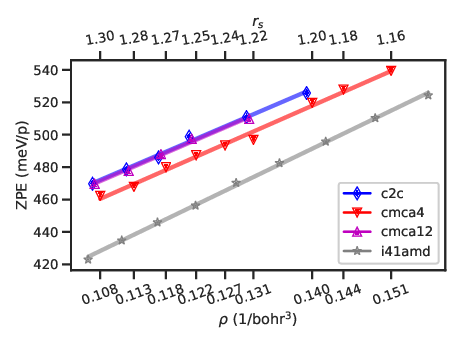
(a) total energy change (zero-point energy)
(b) potential energy change
(c) electronic kinetic energy change
(d) proton kinetic energy
Figure 5.17:Energy changes from static-lattice to dynamic-lattice simulations as functions of electron density
ρ = N∕Ω. (a) zero-point energies of the candidate structures. (b) total potential energy change due to
dynamic protons. (c) electronic kinetic energy change due to dynamic protons. (d) proton kinetic energy.
Color and marker label candidate structures. The solid lines are guides to the eyes.
An immediate consequence of the higher kinetic and potentials energies in the dynamic-lattice simulation is
higher virial pressure, about 20 GPa higher than its static-lattice counterpart. Interestingly, this brings the
dynamic-lattice QMC pressures into better agreement with static-lattice vdW-DF pressures, as we saw in Fig. 5.23
that the static-lattice QMC pressures are systematically lower by ∼ 15 GPa.
The energy-density and enthalpy-pressure relations from the dynamic-lattice simulations are shown relative to
the same reference EOS eq. 5.9 in Fig.5.18. Figure 5.18(a) shows the total energy as a function of density. First,
due to ZPE, the window of energy is shifted up by roughly 500 meV/p from its static-lattice counterpart
Fig. 5.15(a). Second, the relative energy among molecular structures remain similar. The C2/c-24 and Cmca-12
structures remain almost degenerate at all densities, whereas the Cmca-4 transitions from being 20 meV/p
higher in energy at rs= 1.31 to being the lowest-energy structure at sufficiently high density. The
transition density for Cmca-4 does decrease significantly, from rs= 1.19 in the static-lattice case to
rs= 1.25 when ZPE is included. In contrast, the overall trend of the molecular-phase total energy is
noticeably changed by the inclusion of ZPE. Instead of staying flat relative to the reference EOS, the
dynamic-lattice energies of the molecular structures all trend upwards. Similar effects can be observed in the
atomic-phase energy-density relation, although the overall upward shift due to ZPE is about 40 meV/p
less. In summary, ZPE stabilizes the atomic phase by roughly 40 meV/p and the Cmca-4 phase by 10
meV/p relative the C2/c-24 and Cmca-12 without changing the relative angles at which their EOSs
cross.
(a) energy-density relation
(a) enthalpy-pressure relation
Figure 5.18:Dynamic-lattice energy and enthalpy relative to reference. Lines are quadratic fits. The crossed
out points are excluded from the fit.
The enthalpy-pressure relation in Fig. 5.18(b) tells the same story and we can read off the transition pressures
among the candidate structures. We see a transition from C2/c-24 to Cmca-4 slightly below 500 GPa, then a
molecular-to-atomic transition around 660 GPa from Cmca-4 to I41/amd. The calculated transition
pressure to the atomic phase is 160 GPa higher than the previous QMC calculation [2] and a reported
experimental observation [97]. However, the previous calculation used the harmonic approximation to
calculate proton ZPE, while the experiment made little characterization of the final sample and has yet
to be reproduced. As such, a 660 GPa transition pressure is not outside the realm of possibilities.
Admittedly, the current approach has its own drawbacks. The most concerning approximation is the use of
static-lattice orbitals in the electron-ion wave function eq. (5.5). This “frozen orbital” approach incurs
around 80 meV/p more fixed-node error than a Born-Oppenheimer wave function fully-optimized
at each new geometry, although this error cancels to a large extent between molecular and atomic
phases.
5.3.3 Effect of Dynamic Ions on Electronic Correlation Functions
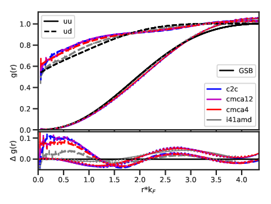
(a) static lattice
(b) dynamic lattice
Figure 5.19:DMC electronic pair correlation functions at rs= 1.25. Color denotes candidate structure, while
the black lines are g(r) of the unpolarized homogeneous electron gas at the same density as parametrized
by P. Gori-Giorgi, F. Sacchetti and G. B. Bachelet (GSB) [61].
The electron-electron pair correlation function in real space, g(r), are shown in Fig. 5.19. The correlation
functions of the 3D unpolarized homogeneous electron gas are also shown as reference. The bottom panel of each
plot shows the difference between the hydrogen g(r)s from those of the electron gas. This difference highlights the
modification of the electron liquid due to the ionic lattice. The dynamic-lattice electronic g(r)s are identical to those
from the static-lattice calculations on the scale of the difference panel (0.1). For the molecular structures, both the
same-spin (u-u) and opposite-spin (u-d) g(r)s are the same over the entire range from zero (r = 0) to the
supercell image distance (r = RWS). The most notable deviation from the electron gas is an enhanced
correlation between opposite-spin electrons at small separation. This is likely due to the presence of
covalent bonds, formed by a pair of opposite-spin electrons at the center of each H2 molecules. A more
subtle difference is the presence of small periodic modulations of the electronic g(r) that appear to
persist at long distances. The atomic structure shows no enhancement of opposite-spin correlation
function at r = 0, whereas it shows the same periodic modulations as the molecular structures at long
range.
Pair correlation function in reciprocal space, the electron-electron static structure factor S(k), is shown in
Fig. 5.20. At all densities and for all structures, both static-lattice and dynamic-lattice results are in excellent
agreement with RPA S(k) for the electron gas. However, small increase in correlation can be seen at
intermediate range k∕kF≈ 1.5. Further, subtle differences at long-range (k → 0) can make the electronic
properties of the candidate structures qualitatively different from those of the electron gas and from each
other.
(a) static lattice
(b) dynamic lattice
Figure 5.21:Upper bound on inverse dielectric constant.
The inverse dielectric function is bounded from above by 𝜖−1(k) ≤ 1 − Γk2, where
Γk=.
(5.11)
The inequality becomes an equality if there is only a single excitation, such as plasmon, at long wavelength. The
limit limk→01 − Γk2 can be a good approximation to the inverse dielectric constant of an isotropic system.
Importantly, if this limit reaches zero, then the material is metallic. In Fig. 5.21, the isotropic limit is shown as a
function of density. There are sizable systematic errors in these results due to a lack of data at small k and the
choice of fitting range. These systematic errors are not precisely estimated, but its size should be
comparable to the oscillation of the data points. The inaccessible region around k = 0 increases with
density, so the high-density results are less reliable than the low-density ones. In the static-lattice
results Fig. 5.21(a), the atomic structure is metallic at all densities as expected. The Cmca-4 and
C2/c-24 structures become metallic at roughly rs= 1.22 and rs= 1.17, respectively. These densities
correspond to 550 GPa and 800 GPa, which are higher than experiment [17] and calculation [18]. It is
possible that the molecular structures first start to conduct in-plane while being insulating across
the planes. In this case, the isotropic dielectric bound derived from spherically averaged S(k) will
overestimate the metalization pressure. The dynamic-lattice results Fig. 5.21(b) show all structures as
metallic at densities higher than rs= 1.26 (460 GPa) except for C2/c-24, which remains borderline
insulating.
5.3.4 Proton-proton g(r) and S(k)
(a) pair correlation function g(r)
(b) static structure factor S(k)
(c) Bragg peaks of p-p S(k)
(d) long wavelength limit
Figure 5.22:Proton-proton pair correlation functions around rs= 1.25 (480 GPa). The solid lines in (b)
are quadratic fits to the smooth part of S(k). (c) Bragg peaks of the p-p S(k) (d) long wavelength limit
S(0). |G1| ≈ 1.81 bohr−1, |G2| ≈ 1.87 bohr−1 for all three molecular structures. |G3| ≈ 2.5 for C2/c-24
and Cmca-4 and 1.93 for Cmca-12. The atomic structure’s Bragg peak can be found between 1.83 and 1.88
bohr−1. The same outliers as Fig. 5.18 are excluded from the quadratic fits in (d).
The proton-proton pair correlation function of all candidate structures at rs≈ 1.25 are shown in Fig. 5.22(a).
Every molecular structure has a peak at the molecular bond length, in agreement with the DFT bond
lengths shown in Fig. 5.5(b). C2/c-24 bond length is around 1.35 bohr, Cmca-4 around 1.40 bohr, and
the Cmca-12 structure is in between. The C2/c-24 and Cmca-12 structures have remarkably similar
p-p g(r). Since they are almost degenerate over the entire density range explored, we can infer that
the slight monoclinic distortions of their unit cells and the small differences in their molecular bond
lengths do not contribute significantly to the total energy. The less distorted C2/c-24 structure is
more stable. The Cmca-4 structure is significantly different from C2/c-24. Cmca-4 has second- and
third-nearest neighbor peaks at 2 and 3 bohr, respectively, rather than C2/c-24’s 2.5 and 3.2. The size and
shape of these peaks are more similar to those in the atomic structure than to the other molecular
candidates.
The long-range fluctuation and order of the protons can be observed in the proton-proton static structure factor.
Its fluctuating part is shown in Fig. 5.22(b). All three molecular candidates have very similar levels of long-range
fluctuations, whereas the atomic structure has noticeably more.
The molecular structures have more crystalline signatures than the atomic phase. As shown in Fig. 5.22(c), after
spherical average, each molecular structure has at least three Bragg peaks for k < 4 bohr−1, while the
atomic structure has only one. The C2/c-24 and Cmca-12 Bragg peaks have very similar intensities and
remain relatively unchanged by pressure. However, the Cmca-4 structure’s most intense Bragg peak is
comparable with that in the atomic structure and decreases in intensity as pressure increases. Finally, the
long wavelength limit of the static structure factor can be related to the isothermal compressibility
κ ≡ n()|T
nkBTκ = S(0),
(5.12)
where n is the density. We can extract the long wavelength limit of the p-p S(k) by fitting its fluctuating part to
a quadratic polynomial as shown in Fig. 5.22(a). The value of the fit extrapolated to k = 0 is shown as a function of
pressure for all candidates in Fig. 5.22(d). The compressibility of C2/c-24 is approximately independent
of pressure, whereas that of the Cmca structures and the atomic structure increase with pressure
at a similar rate. The atomic structure is twice as compressible as the molecular structures at all
pressures.
(a) static-lattice absolute scale
(b) dynamic-lattice absolute scale
(c) static-lattice relative to P0
(d) dynamic-lattice relative to P0
Figure 5.23:Pressure-density relation. The solid lines are clamped-ion vdW-DF pressures, whereas the
symbols are QMC pressures. (a) (c) show static-lattice results, while (b) (d) show dynamic lattice results.
Color denotes different candidate structures. The open and filled symbols represent VMC and linearly
extrapolated DMC estimator results. They overlap on the absolute scale in (a) but can be seen to differ by 1 to
5 GPa on a relative scale in (b). The reference pressure-density relation P0= −dE0∕dv is calculated from the
reference EOS E0(1∕v). The same clamped-ion reference is used for both static-lattice and dynamic-lattice
results.
5.4 Conclusion
The ordering of the candidate structures from this dynamic-lattice study show similar features as the previous QMC
study using vdW-DF geometries and harmonic ZPE [2]. The Cmca-12 structure is nearly degenerate with C2/c-24
but slightly less stable at low pressures. There is a transition from C2/c-24 to Cmca-4 around 500 GPa. Then, a
Cmca structure transitions to the I41/amd atomic structure at a higher pressure. However, we predict no stability
range for the Cmca-12 structure, whereas in Ref. [2], C2/c-24 transitions to it at 424(3) GPa. The most significant
disagreement lies in the atomic phase. We see the atomic phase becomes more stable relative to C2/c-24 around 610
GPa, whereas Ref. [2] shows this crossing around 450 GPa. Our final prediction for the molecular-to-atomic
transition pressure is 660 GPa, which is significantly higher than the previous experimental result [97].
However, as already mentioned in Sec. 5.3.2, this prediction is not impossible. The dynamic-lattice DMC
method is a conceptually simple way to directly simulate an electron-ion system and offers more ionic
observables as well as direct comparisons with the static-lattice system than a single clamped-ion
calculation. A Born-Oppenheimer study using the DMC energy surface is needed to bridge the previous
static-lattice and harmonic ZPE study with the current dynamic-lattice nonadiabatic calculation. A detailed
comparison among the three variants will hopefully resolve some of the disagreements we currently
have.
Appendices
Chapter A Nonadiabatic Coupling
The electron-ion problem can be made more tractable at the cost of a physically motivated Born-Oppenheimer
approximation (BOA). I define the BOA at the end of this section, but first lay out the exact formulation in
eq. (A.4) so that the content of the approximation is clear. Ions move much slower than electrons due to their heavy
mass (mI≈ 103 to 105mi), so it is sensible to isolate the ionic degrees of freedom and consider the electronic part
separately. The coupling between the ionic and electronic problems is presumably weak because of the separation of
timescales.
Ĥ= −∑I∇I2+ℋ(R;RI),
(A.1)
where ℋ is the clamped-ion or electronic hamiltonian, which typically defines the ultimate goal of an electronic
structure method. The semicolon in ℋ(R;RI) indicates that the electronic hamiltonian is only parametrically
dependent on the ion positions RI. M. Born and R. Oppenheimer (BO) [121] first utilized this separation of
timescales to study diatomic molecules in 1927. As explained around eq. (27) and (28) in Ref. [121], BO expressed
the electronic hamiltonian as a Taylor expansion around the equilibrium positions of the ions. They discussed
results using the first four leading order terms in the vibration amplitude of the ions. Thus, what we
define as “the” BOA can be ambiguous. Here, I follow the interpretation by G. A. Worth and L. S.
Cederbaum [9], which is equivalent to assuming a product ansatz eq. (A.7), but without a “diagonal
correction”.
If one can obtain the eigenstates of the electronic hamiltonian {ψk} at any ion configuration RI
ℋ(R;RI)ψk(R;RI) = Ek(RI)ψk(R;RI),
(A.2)
then one can expand an eigenstate of the full hamiltonian Ĥ in the basis of electronic eigenstates
Ψl(R,RI) =∑k=0∞χlk(RI)ψk(R;RI),
(A.3)
where the expansion coefficients χlk(RI) will later be identified with the ionic wave function in the
Born-Oppenheimer approximation. l runs over the full electron-ion hamiltonian’s eigenstates, which can have both
ionic (vibrational) and electronic characters. The coefficient for one of these vibronic states cannot be
determined separately for each electronic level k in general. To see this, substitute the l = 0 expansion
eq. (A.3) into the time-dependent Schrödinger equation for the full electron-ion hamiltonian (drop l for
simplicity)
= iℏ⇒ apply operators
∑kEkχkψk−∑I=∑kiℏχkψk⇒ apply ∫ψj∗
∑kEkχkδjk−∑I=∑kiℏχkδjk⇒ perform ∑k
χj−= iℏχj,
(A.4)
where the matrix elements for gradient (derivative-coupling terms) and laplacian (scalar-coupling terms) in the
electronic eigenstates basis are
.
(A.5)
The matrix elements that couple different electronic states in eq. (A.4) are named nonadibatic coupling operators
by Worth and Cederbaum [9]
Λjk=∑I.
(A.6)
Every term in Λjk has an inverse ion mass prefactor , so they are expected to be small in most cases. There
are two common approximations of Λkj, the first is to set the entire matrix to zero, the second is to set only the
off-diagonal terms to zero. Both approximations decouple (A.4), allowing the complete separation of electronic and
ionic motions. Many different and sometimes conflicting names have been given to these two approximations
including Born-Huang, Born-Oppenheimer and adiabatic approximation. To fix nomenclature, I will call the all-zero
approximation, Λjk= 0,∀j,k, the Born-Oppenheimer approximation (BOA). The diagonal terms Λjj are
considered diagonal Born-Oppenheimer correction (DBOC). Non-zero off-diagonal elements are responsible for
nonadiabatic effects.
The ground state in the BOA is a product of an ionic and an electronic component
ΨlkBO(R,RI) = χlk(RI)ψk(R;RI),
(A.7)
where a set of vibrational states labeled by l can be defined over a particular electronic state k. χl(RI) obeys its
own Schrödinger equation on an effective potential energy surface provided by an eigenvalue of the
electronic hamiltonian Ek(RI) = , a.k.a. the Born-Oppenheimer potential energy surface
(BO-PES)
χl= iℏχl.
(A.8)
Once the ionic eigenstates are obtained by diagonalizing eq. (A.8), the total energy of the electron-ion system is
finally obtained as
ElkBO≡.
(A.9)
E00BO differs in two ways from the electronic ground-state energy
E0≡(RI),
(A.10)
which is a function of the positions of the ions RI. First, in E00BO the electronic energy is averaged over a
distribution of ion configurations |χ0|2(RI) rather than evaluated at one fixed configuration RI. This quantum
delocalization effect raises the total energy from the bottom of the BO-PES RIe= E0(RI), which would
have been the electron-ion ground state if the ions were classical. Second, the ions have kinetic energy even at
absolute zero, which also contributes a positive term to the total energy. The difference between the electron-ion
ground-state energy and the electronic one is the zero-point energy (ZPE). In the BOA, ZPE contains only two
terms from delocalization and kinetic energy of the ions.
Within the BOA framework, solving the electron-ion problem for a particular combination of vibrational l and
electronic state k involves finding the kth eigenvalue of the clamped-ion electronic problem ℋ(R;RI)
for many ion configuration RI. There are established first-principle molecular dynamics and Monte
Carlo methods for achieving this, but they are not practical for even moderately sized system, e.g.,
O(1000) atoms, because the computational cost of electronic structure methods generally scale as N3 or
worse.
The main short-fall of the BOA is its lack of pathways for the ions to transfer energy to the electrons. This is
critical in the study of radiation damage, where a fast moving ion can transfer energy to both the electrons and the
ions in a material. Further, for chemical reactions involving vibration-assisted bond breaking, the BOA
reduces the number of pathways dissociation can happen, thereby resulting in an incomplete description.
The BOA can also break down if the electrons interact with a particle much lighter than an atomic
nucleus such as a positron or a muon. Finally, the nonadiabatic coupling terms can diverge when two
electronic states cross, e.g., at a conical intersection. Thus, it is sometimes important to go beyond the
BOA.
There are two small parameters that control the scale of nonadiabatic coupling eq. (A.6). One is clearly the
inverse ionic mass , while the other is the difference between electronic energy levels 𝜖j− 𝜖k. This can be seen
from an explicit form of FIjk≡ in the derivative-coupling term. Consider the effect of
ion motion on the electronic problem, i.e., take ∇I of the time-independent electronic Schrödinger
equation
If the electronic eigenstates are defined to be orthonormal, then the real part of the derivative-coupling vectors
vanish (FIkj)∗+ FIjk= 0 ⇒ Re[FIjk] = 0 as derived in eq. (A.12).
⇒∇I= 0 ⇒
+ = (FIkj)∗+ FIjk= 0.
(A.12)
FIkj can be interpreted as follows: the motion of the ions apply an imaginary “force” that drives an
electronic transition from state k to state j. This interpretation has led to surface hopping methods for classical and
quantum ions [122, 123], which have been applied successfully to describe proton transfer and proton-coupled
electron transfer reactions [124]. Further, this “force” is inversely proportional to the energy separation between the
two eigenstates. The derivative-coupling term is considered more interesting than the scalar-coupling term due to its
potential divergence as 𝜖k→ 𝜖j.
If the wave function is real, then there is no derivative coupling within the same electronic state
FIjj= = = (FIjj)∗⇒ FIjj= 0. In this case, the DBOC is simply the expectation value of
the ion kinetic operator in the electronic state
Λjj=∑IGIjj=∫ψj∗∑I∇I2ψj= j.
(A.13)
The diagonal correction for the hydrogen molecule was studied extensively by Kolos and Wolniewicz [34, 125,
126]. For the atomization energy of H2, the DBOC was found to be 4.947 cm−1, which is only a 0.0129%
correction of its clamped-ion value of 38292.7 cm−1. The nonadiabatic contribution to ionization and
atomization energies of a few atoms and small molecules are explored in Ref. [127] and references
therein.
Chapter B Minimum-basis H2
To derive the Hartree-Fock equations, we use a Slater determinant to evaluate the total energy, then minimize it.
Consider N spinless fermions, labeled using i,j,k,…, in N orbitals χa,χb,…,χN. Given determinant
wavefunction = and electronic Hamiltonian made up of only one- and two-electron terms
ℋ =∑i=1Nh(i) +∑i=1N∑j>iNv(i,j). The total energy is
Constraint minimization of eq. (B.1) with the extra requirement that each spin orbital is doubly occupied leads
to the restricted Hartree-Fock (RHF) Fock operator. Its first N∕2 eigenvectors are the spin orbitals in the
lowest-energy Slater determinant. The lowest energy value can be obtained by a weighted sum of its eigenvalues
according to the occupation of the spin orbitals.
Instead of starting with the tedious derivation of the Fock operator and its iterative numerical
solver, I will first show a concrete application of RHF to minimum-basis hydrogen molecule (H2).
On p. 140 of A. Szabo and N. S. Ostlund, the restricted Fock operator in any basis {ϕμ} is written
as
Fμν= Hcoreμν+∑a=1N∕22(μν|aa) − (μa|aν),
(B.2)
where a labels molecular orbitals, which are eigenstates of the Fock operator. We immediately note that the Fock
operator is a peculiar one-electron operator that depends on its own eigenstates. A self-consistent solution to Fμν
typically involves guessing, checking and iterating.
Hcoreμν is the one-electron part of the Hamiltonian expressed in the given basis
Hcoreμν=∫dr1ϕμ∗(r1)ϕν(r1).
(B.3)
The two-electron integral notation (μν|λσ) is defined by eq. (3.155) in Szabo
is often called the Coulomb or direct operator, because it describes the Classical density-density interaction of
charged particles having density distribution ϕa∗(r2)ϕa(r2). The second term
Kμν≡ (μa|νa)
(B.6)
is the exchange operator and has no classical interaction. The exchange-correlation contribution to the Fock
matrix is sometimes called the Hartree-Fock effective potential operator
V effμν≡ 2Jμν− Kμν.
(B.7)
Suppose each molecular orbital a is written as a linear combination of the basis functions
ψa=∑μ=1KCμaϕμ,
(B.8)
then the Fock operator can be written as (from Roothaan equations)
Fμν= Hcoreμν+∑λσPλσ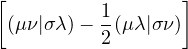,
(B.9)
where Pλσ= 2∑a=1N∕2CλaCσa∗ is the density matrix of the trial states.
Conceptually, the simplest approach would be to use the ground-state wavefunctions of the two hydrogen atoms
as the basis for the hydrogen molecule. We can guess the ground-state wavefunction of the hydrogen molecule. First,
the spins of the two electrons anti-align, so they are distinguishable particles. Second, due to symmetries
imposed by the two protons, the ground state must be equal superposition of the two basis functions.
Third, the lowest-energy solution has no node. Therefore, the ground state of H2 in the minimum basis
is
ψ1= −1∕2,
(B.10)
where S12= . That is C11= C21= −1∕2
Pλσ= −1∕2.
(B.11)
This guess was obtained as early as 1927 by V. W. Heitler and F. London [129]. Unfortunately,
the multi-center integrals eq. (B.3) and (B.4), needed to evaluate the total energy, have no analyical
form in the basis of Slater type orbitals (STOs) (see thesis of Michał Lesiuk). Thus, Heitler-London
used an upper bound to approximate the two-electron integral and obtain a bond length of 1.5 bohr
and binding energy of 2.5 eV, noticeably different from the experimental values of 1.4 bohr and 4.5
eV.
In modern quantum chemistry, instead of directly approximating the integrals, we analytically evaluate the
integrals by approximating each basis function as a sum of Gaussians. This reduces the multi-center integrals to
single-center integrals, because a product of Gaussians centered on different atoms is also Gaussian but with a
different center. The so-called STO-3g basis expresses a STO as a sum of 3 “primitive Gaussians” (see
eq. (3.225) of Szabo). Using this basis, the bond length and binding energy become 1.35 bohr and
3.2 eV, having roughly half the discrepancy with experiment when compared to the Heitler-London
values.
Figure B.1 shows the STO-3g basis compared to the exact STO it approximates
χ(r) ≡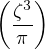1∕2e−ζr≈ ϕ(r) =∑i=13ci3∕4e−αir2,
(B.12)
where the exponents α and coefficients c are given below:
α
c
3.42525091
0.15432897
0.62391373
0.53532814
0.16885540
0.44463454
Figure B.1:STO-3G
For H2, the STO-3G basis consists of only two 1s functions, each centered around a nucleus.
,
(B.13)
where R1= 0, and R2= 1.4ẑ bohr near equilibrium. At 1.4 bohr separation, the kinetic and the electron-ion
interaction matrices evaluate to
Tμν≡= ,
(B.14)
Vμν≡= ,
(B.15)
which sum to the 1-electron hamiltonian Hcoreμν by eq. (B.3)
Eigenvectors of Hcoreμν are typically used to construct the initial density matrix to start a self-consist solution of
the Hartree-Fock equations. However, in the case of H2, these eigenvectors coincide with the final solution, so we
obtain the converged density matrix with no iteration from eq. (B.11)
Cμ1= ; Pμν= .
(B.16)
Finally, we can evaluate the so-called electron repulsion integrals (eris) and the Fock matrix eq. (B.9)
Table B.1:symmetry-inequivalent electron repulsion integrals for H2 in STO-3G.
μ
ν
λ
σ
(μν|λσ)
1
1
1
1
0.774605930
1
1
1
2
0.444107650
1
1
2
2
0.569675915
1
2
1
2
0.297028535
Jμν= ; Kμν= ;
(B.17)
Fμν= .
(B.18)
The total energy is −1.11671432 ha, while the electronic contribution is −1.831 ha, before adding the ion-ion
repulsion Vii= 1∕1.4 ha. Interested reader should reproduce the Fock matrix for STO-3G H2 at 1.4 bohr
separation, i.e. eq. (B.18), to consolidate a practical understanding of RHF.
In the PZ formulation of KS-DFT, the only difference between the LDA and the RHF calculations lies in the
“exchange” matrix
Kμν′ = ,
(B.19)
which now contains an approximation to both exchange and correlation effects rather than exact exchange in the
case of HF. The Fock matrix is
Fμν= 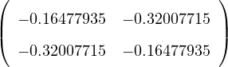,
(B.20)
and the LDA electronic contribution is −1.73929592 ha.
Chapter C Derivation of Higher-order Band Gap Correction
Total potential energy
V =∑k≠0vkSk,
(C.1)
where Sk≡. ρk≡∑j=1Neeik⋅rj is the electronic density in reciprocal space. Ω is system volume.
denotes average over walker ensemble. The potential energy V can be written as a sum of static (density)
contribution and fluctuating contribution
V = + .
(C.2)
The fluctuating part can be used to calculate leading-order finite-size correction to the band gap, where the
static part leads to the next-to-leading-order correction.
Vs≡∑k≠0vk.
(C.3)
The goal of this Appendix is to find the FSC formula for Vs. Assuming the finite-size error in the electron
density can be fully recovered by twist-averaging, the infinite-system potential energy can be computed using the
twist-averaged density , where twist average is denoted by overline
V sN→∞=∑k≠0vk.
(C.4)
Therefore, the FSC of Vs is
δVs≡ V sN→∞− Vs=∑k≠0vk.
(C.5)
differs from twist to twist, so there is one such correction for each twist. Define
Ck≡,
(C.6)
then the FSC of the potential energy is
δVs= 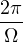∑k≠0Ck∕k2.
(C.7)
In simulation, we assemble the MNe+ 1 system with varying density at each twist
ρkMNe±1=∑𝜃δ𝜃,ϕ+ Ne,𝜃.
(C.8)
The GCTA corrected charge density varies only at the target twist ϕ
ρkMNe±1=∑𝜃δ𝜃,ϕ+ρkNe.
(C.9)
The neutral mean density ρkNe has no dependence on the twist 𝜃
ρkNe≡Ne,𝜃.
(C.10)
For simplicity, define the charge density of the particle/hole as
Πk≡Ne±1,ϕ−Ne,ϕ.
(C.11)
Now, the GCTA correction can be clearly seen as the replacement of neutral twist density Ne,𝜃 with neutralmean density ρkNe
.
(C.12)
The charged twist density ρkNe±1(𝜃) and the charged mean density ρkNe±1(𝜃) are defined by the summand on
each line. A likely cause of confusion here is that the charged mean density depends on the twist 𝜃. Further, it is not
the mean of the charged twist density
ρkNe±1(𝜃′)≠∑𝜃ρkNe±1(𝜃).
(C.13)
This correction does not affect properties linear in ρk, but does change the potential energy, which is quadratic
in ρk. If the MNe system is constructed from M independent simulations each containing Ne electrons, then
the charge density is different at each twist. The Hartree contribution to the total potential energy
is
V sMNe+1=∑𝜃∑k∈Gvk ρkNe+1(𝜃)ρ−kNe+1(𝜃).
(C.14)
One can speed up the convergence of eq. (C.14) to the thermodynamic limit by replacing twist density with
mean density
limN→∞V sMNe+1=∑𝜃∑k∈GvkρkNe+1(𝜃)ρ−kNe+1(𝜃).
(C.15)
Define the correction factor
CkNe+1(𝜃) ≡
ρkNe+1(𝜃)ρ−kNe+1(𝜃) − ρkNe+1(𝜃)ρ−kNe+1(𝜃),
(C.16)
then the GCTA finite-size correction to the Hartree contribution to the potential is
δV sMNe+1=∑k∈Gvk∑𝜃CkNe+1(𝜃).
(C.17)
Eq. (C.16) can be much simplified when calculated relative to the neutral state
Jeremy McMinis et al. “Molecular to Atomic Phase Transition in Hydrogen under High Pressure”.
In: Phys. Rev. Lett. 114.10 (2015), pp. 1–6. issn: 10797114. doi: 10.1103/PhysRevLett.114.105305.
M Holzmann et al. “Backflow correlations for the electron gas and metallic hydrogen.” In: Phys. Rev.E. 68.4 Pt 2 (2003), p. 046707. issn: 1063-651X. doi: 10.1103/PhysRevE.68.046707. arXiv: 0304165
[cond-mat].
[11]
Burkhard Militzer. “Path Integral Monte Carlo Simulations of Hot Dense Hydrogen”. PhD thesis.
University of Illinois at Urbana-Champaign, 2000.
A. P. Drozdov et al. “Conventional superconductivity at 203 kelvin at high pressures in the sulfur
hydride system”. In: Nature 525.7567 (2015), pp. 73–76. issn: 0028-0836. doi: 10.1038/nature14964.
url: http://www.nature.com/articles/nature14964.
D. M. Ceperley. “Path integral Monte Carlo methods for fermions”. In: Monte Carlo and MolecularDynamics of Condensed Matter Systems. Ed. by K. Binder and G. Ciccotti. Italy: Editrice
Compository, 1996.
Carlos L. Benavides-Riveros, Nektarios N. Lathiotakis, and Miguel A. L. Marques. “Towards a
formal definition of static and dynamic electronic correlations”. In: Phys. Chem. Chem. Phys.
19.20 (2017), pp. 12655–12664. issn: 1463-9076. doi: 10.1039/C7CP01137G. arXiv: 1705.00238. url:
http://xlink.rsc.org/?DOI=C7CP01137G.
M. Levy. “Universal variational functionals of electron densities, first-order density matrices,
and natural spin-orbitals and solution of the v-representability problem”. In: Proc. Natl.Acad. Sci. 76.12 (1979), pp. 6062–6065. issn: 0027-8424. doi: 10.1073/pnas.76.12.6062. url:
http://www.pnas.org/cgi/doi/10.1073/pnas.76.12.6062.
Jochen Heyd, Gustavo E. Scuseria, and Matthias Ernzerhof. “Hybrid functionals based on a
screened Coulomb potential”. In: J. Chem. Phys. 118.18 (2003), pp. 8207–8215. issn: 0021-9606. doi:
10.1063/1.1564060. url: http://aip.scitation.org/doi/10.1063/1.1564060.
[47]
D. M. Ceperley. “Understanding Electronic Wave Functions”. In: Electron Correlations and MaterialsProperties. Ed. by A. Gonis, N. Kioussis, and M. Ciftan. Springer US, 1999, pp. 429–438.
Giuseppe Carleo et al. “Unitary Dynamics of Strongly Interacting Bose Gases with
the Time-Dependent Variational Monte Carlo Method in Continuous Space”. In: Phys.Rev. X 7.3 (2017), p. 031026. issn: 2160-3308. doi: 10.1103/PhysRevX.7.031026. url:
http://link.aps.org/doi/10.1103/PhysRevX.7.031026.
Paola Gori-Giorgi, Francesco Sacchetti, and Giovanni Bachelet. “Analytic static structure factors
and pair-correlation functions for the unpolarized homogeneous electron gas”. In: Phys. Rev. B 61.11
(2000), pp. 7353–7363. doi: 10.1063/1.1390176.
David Bohm and David Pines. “A Collective Description of Electron Interactions: III. Coulomb
Interactions in a Degenerate Electron Gas”. In: Phys. Rev. 92.3 (1953), pp. 609–625. issn: 0031-899X.
doi: 10.1103/PhysRev.92.609. url: https://link.aps.org/doi/10.1103/PhysRev.92.609.
Paola Gori-Giorgi, Saverio Moroni, and Giovanni B. Bachelet. “Pair-distribution functions of the
two-dimensional electron gas”. In: Phys. Rev. B 70.11 (2004), pp. 1–12. issn: 01631829. doi:
10.1103/PhysRevB.70.115102.
S. M. Wahl et al. “Comparing Jupiter interior structure models to Juno gravity measurements and
the role of a dilute core”. In: Geophys. Res. Lett. 44.10 (2017), pp. 4649–4659. issn: 19448007. doi:
10.1002/2017GL073160. arXiv: 1707.01997.
Chang-Sheng Zha et al. “Raman measurements of phase transitions in dense solid hydrogen and
deuterium to 325 GPa.” In: Proc. Natl. Acad. Sci. U. S. A. 69.7 (2014), pp. 1129–1132. issn: 1091-6490.
doi: 10.1073/pnas.1402737111. url: http://www.ncbi.nlm.nih.gov/pubmed/24639543.
M. D. Knudson et al. “Principal Hugoniot, reverberating wave, and mechanical reshock
measurements of liquid deuterium to 400 GPa using plate impact techniques”. In: Phys.Rev. B 69.14 (2004), p. 144209. issn: 1098-0121. doi: 10.1103/PhysRevB.69.144209. url:
https://link.aps.org/doi/10.1103/PhysRevB.69.144209.
Miguel A. Morales et al. “Nuclear quantum effects and nonlocal exchange-correlation functionals
applied to liquid hydrogen at high pressure”. In: Phys. Rev. Lett. 110.6 (2013), pp. 1–6. issn: 00319007.
doi: 10.1103/PhysRevLett.110.065702. arXiv: arXiv:1303.6671v1.
[87]
Hector E. Lorenzana, Isaac F. Silvera, and Kenneth A. Goettel. “Orientational phase transitions in
hydrogen at megabar pressures”. In: Phys. Rev. Lett. 64.16 (1990), pp. 1939–1942. issn: 00319007.
doi: 10.1103/PhysRevLett.64.1939.
Igor Goncharenko and Paul Loubeyre. “Neutron and X-ray diffraction study of the broken symmetry
phase transition in solid deuterium”. In: Nature 435.7046 (2005), pp. 1206–1209. issn: 0028-0836. doi:
10.1038/nature03699. url: http://www.nature.com/articles/nature03699.
Susanne Raynor. “Novel ab initio self‐consistent‐field approach to molecular solids under pressure.
II. Solid H2 under high pressure”. In: J. Chem. Phys. 87.5 (1987), pp. 2795–2799. issn: 0021-9606.
doi: 10.1063/1.453067. url: http://aip.scitation.org/doi/10.1063/1.453067.
A. Szabo and N. S. Ostlund. Modern quantum chemistry : introduction to advanced electronic structuretheory. Minelola, N. Y.: Dover Publications, 1996.
[129]
W. Heitler and F. London. “Wechselwirkung neutraler Atome und homopolare Bindung nach der
Quantenmechanik”. In: Zeitschrift fur Phys. 44.6-7 (1927), pp. 455–472. issn: 1434-6001. doi:
10.1007/BF01397394. url: http://link.springer.com/10.1007/BF01397394.
 rs = ρ, where ρ = Ne∕Ω, with Ω the supercell volume. RWS is the radius of
the real-space Wigner-Seitz cell of the supercell. 2RWS is the minimum distance between
periodic images.
rs = ρ, where ρ = Ne∕Ω, with Ω the supercell volume. RWS is the radius of
the real-space Wigner-Seitz cell of the supercell. 2RWS is the minimum distance between
periodic images.  .
.
 .
.


 to eq. (
to eq. (


 works by sampling particle configurations from the Bolzmann distribution
works by sampling particle configurations from the Bolzmann distribution 

 are the eigenvalues and eigenstates of the hamiltonian
are the eigenvalues and eigenstates of the hamiltonian  . Then the partition function becomes
. Then the partition function becomes


 is the
is the ![( M∑ [ 2 ])
− (Rm-−1 −-Rm-) + τV(Rm )
m=1 4λτ](yyang173-thesis45x.png)
 eq. (
eq. (
 , so long as it is non-negative. The ground-state “partition” function has only one
term
, so long as it is non-negative. The ground-state “partition” function has only one
term
 is the ground state of the hamiltonian
is the ground state of the hamiltonian 

 is a good approximate to the ground state
is a good approximate to the ground state  . In this sense,
. In this sense,


![[ 1 ]
(μν|σλ )− -(μλ|σν)
2](yyang173-thesis95x.png)


 . Since
. Since 


 in reciprocal space.
Therefore the inverse Fourier transform (
in reciprocal space.
Therefore the inverse Fourier transform (


![[ ]
− λ∇2 +v(r)](yyang173-thesis174x.png)
 in 3D. This is
the cusp condition for unlike-spin electron pair. For same-spin pair, the two particles are indistinguishable and the
laplacian for each particle contributes a copy of the divergent term, thus
in 3D. This is
the cusp condition for unlike-spin electron pair. For same-spin pair, the two particles are indistinguishable and the
laplacian for each particle contributes a copy of the divergent term, thus  . For an electron-ion pair in the
clamped-ion approximation (
. For an electron-ion pair in the
clamped-ion approximation (


 (a) rotons
(a) rotons
 (b) vibron
(b) vibron


 (a) dynamic lattice
(a) dynamic lattice


 . That is
. That is ![[2(1+ S )]
12](yyang173-thesis407x.png)

 denotes average over walker ensemble. The potential energy
denotes average over walker ensemble. The potential energy